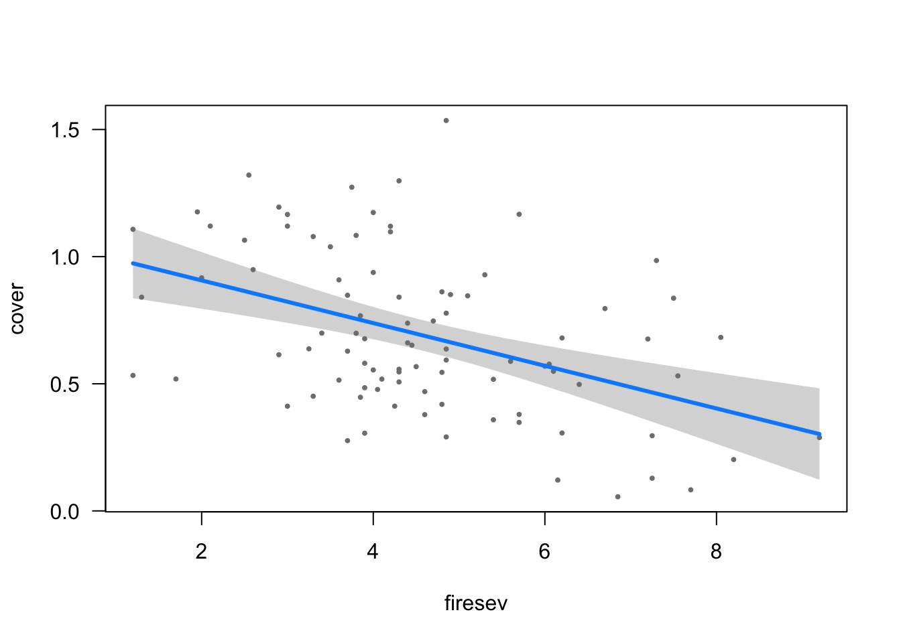
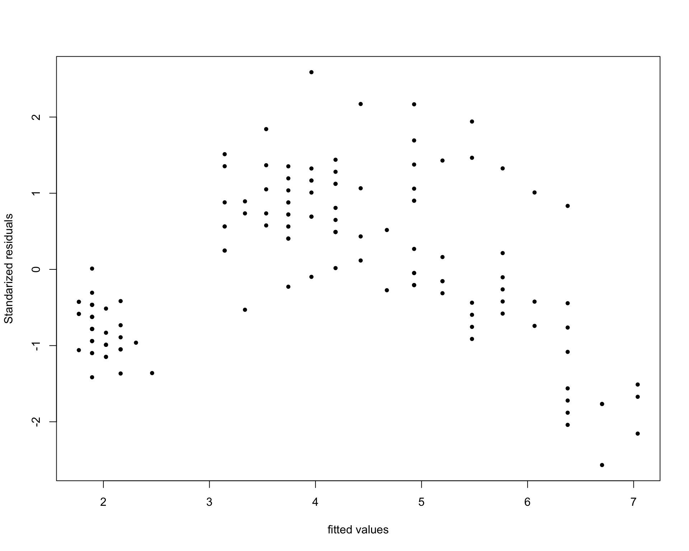
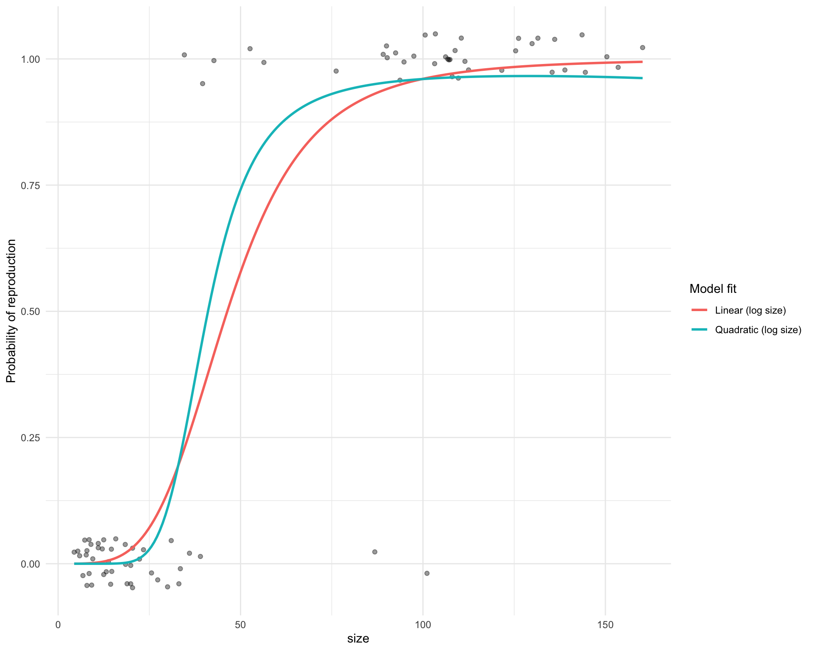
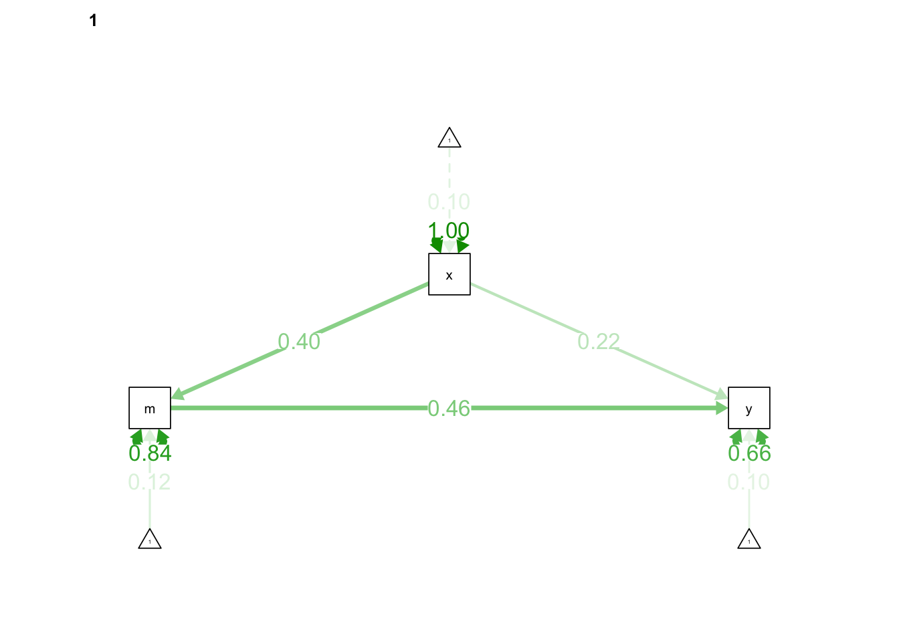
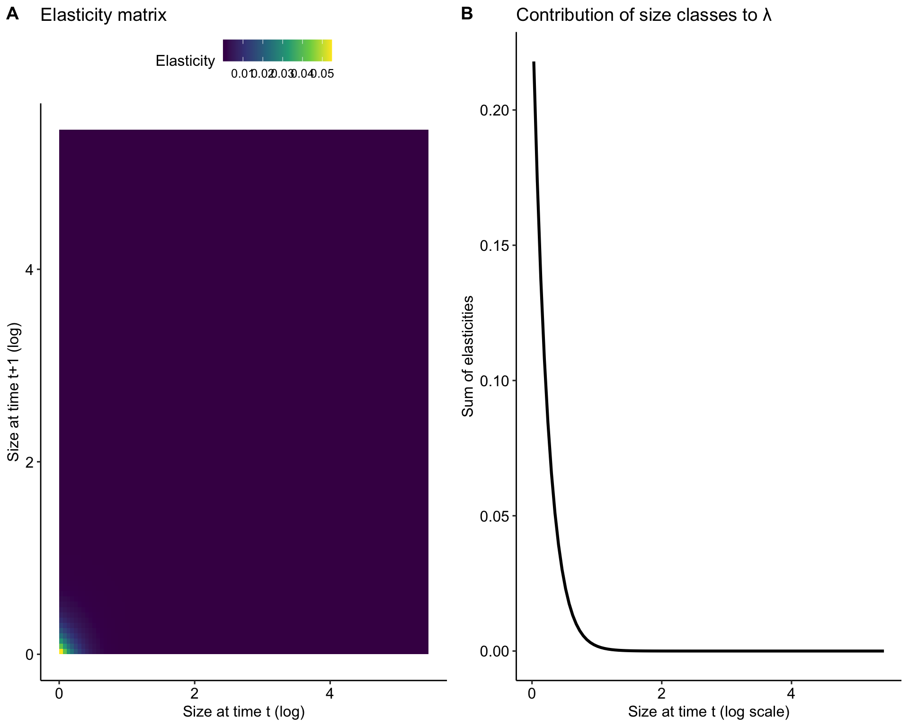
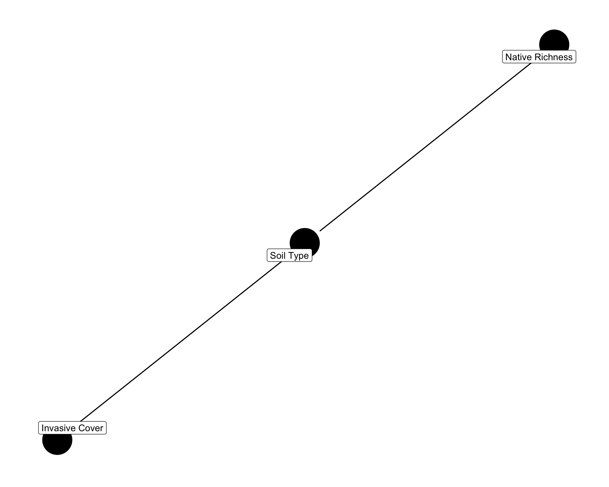

Chapter 17 Integral Population Models
17.1 Case Study: Modeling an Endangered Hawaiian Plant
For our applied example, we’ll build a population model for Silene lanceolata (lanceolate catchfly), a small woody shrub endemic to the Hawaiian Islands. This species is federally listed as threatened/endangered and faces multiple conservation challenges that make it an ideal candidate for demographic modeling.
17.1.1 Why model S. lanceolata populations?
Hawaiian plant species like S. lanceolata occur in small, isolated populations that are particularly vulnerable to extinction. At Pōhakuloa Training Area (PTA) on Hawaii Island, these native plants face a perfect storm of threats:
- Invasive plant competition: Fountain grass (Cenchrus setaceus) and fireweed (Senecio madagascariensis) outcompete native species for water, light, and space
- Altered fire regimes: Invasive grasses produce fine fuels that dramatically increase fire frequency—a disturbance to which Hawaiian plants have no evolutionary adaptations
- Climate change: Increasing drought frequency threatens plants already stressed by competition and fire
- Small population sizes: Limited numbers mean that small changes in vital rates (survival, growth, reproduction) can have large consequences for extinction risk
17.1.2 The management question:
Conservation managers need to decide how to allocate limited resources. Should they prioritize invasive plant control? Focus on fire suppression? Protect certain life stages? Population models allow us to project population trajectories under different management scenarios and identify which vital rates have the greatest influence on population growth. In this example, we’ll use demographic data collected from field studies at PTA to build an Integral Projection Model (IPM) that links individual plant size to survival, growth, and reproduction. This will allow us to evaluate how management actions might influence S. lanceolata persistence.
17.2 Designing a Demographic Census: Timing and Measurements
Before we dive into building the population model, let’s review how demographic data are collected. The design of a census protocol involves several critical decisions that directly impact the quality and interpretability of your population projections.
17.2.1 Principle 1: Census Timing Must Align with the Organism’s Life Cycle
For demographic models to be meaningful, censuses must occur at regular intervals that correspond to biologically relevant time steps. Ideally, you want to census:
At the same time each year to capture consistent population states Before or after major demographic events (reproduction, mortality pulses, germination) When individuals are most visible/measurable for accurate data collection
For S. lanceolata at Pōhakuloa Training Area, we faced practical constraints. While Hawaii lacks dramatic seasonal variation in temperature, the species does show phenological patterns. We conducted censuses in summer for several pragmatic reasons:
- Field accessibility: Summer weather allowed consistent access to remote field sites
- Plant visibility: Woody shrubs maintain their structure year-round, but summer timing captured both vegetative and reproductive activity
- Logistical feasibility: Research team availability and funding cycles
The key is that we censused at the same time each year, allowing us to track year-to-year changes in a standardized way. Our annual time step (summer to summer) captures one full cycle of growth, reproduction, and survival.
17.2.2 Principle 2: Measurements Must Link to Vital Rates
Demographic models require data on survival, growth, and reproduction. The measurements we collect must allow us to estimate these vital rates. For S. lanceolata, we structured our census to capture:
Size Measurements (for survival and growth): We measured multiple aspects of plant size because size often predicts both survival probability and reproductive output:
- Foliated length of longest branch (cm): Captures vegetative vigor and photosynthetic capacity
- Plant height (cm): Structural size metric, indicates establishment and competitive ability
- Plant height with reproductive stalk (cm): Total height including reproductive structures
- Stem diameter (cm): Proxy for plant age and woody biomass accumulation
- Number of branches (n): Architectural complexity, related to resource acquisition
For our Integral Projection Model (IPM), we’ll select one primary size variable that best predicts survival, growth, and fecundity. Often this is stem diameter or height, but we measured multiple metrics to explore which is most predictive.
Reproductive Measurements (for fecundity): To estimate how many offspring each individual produces, we counted:
Number of inflorescences (n): Reproductive effort (number of flowering stalks)
Number of flowers and seed heads per stalk: Potential and realized seed production
Seeds per fruit: Obtained from literature since counting tiny seeds in the field is impractical
These measurements allow us to build a size-fecundity function: larger plants typically produce more inflorescences, more flowers, and ultimately more seeds.
17.2.3 Principle 3: Track Individual Fates Through Time
The power of demographic models comes from tracking individuals across census intervals:
- Did this individual survive from year t to year t+1?
- If it survived, how much did it grow (change in size)?
- How many offspring did it produce?
This requires marking individual plants (tags, GPS coordinates, maps) so we can relocate them in subsequent years. For S. lanceolata, each plant received a unique identifier allowing us to build a longitudinal dataset of individual life histories.
17.2.4 Principle 4: Document Context and Threats
Beyond demographic measurements, we recorded factors that might explain variation in vital rates:
- Browse damage: Evidence of herbivory (ungulates, insects)
- Fire history: Burned vs. unburned individuals
- Disease/stress: Chlorosis, wilting, pathogen damage
- Proximity to invasive plants: Competition effects
These covariates allow us to ask: Does fire reduce survival? Do plants near fountain grass grow more slowly? Does herbivory reduce reproduction?
Let’s check out data from our initial collection trip:
library(tidyverse)
library(httr)
# Create data directory if it doesn't exist
if (!dir.exists("data")) dir.create("data")
# Google Drive file ID
file_id <- "1WCToCDAuSR_Wd2ScRy9yhwiDGijL47OX"
GET(
url = paste0(
"https://drive.usercontent.google.com/download?id=",
file_id, "&export=download&confirm=t"
),
write_disk("data/silene_census.csv", overwrite = TRUE)
)## Response [https://drive.usercontent.google.com/download?id=1WCToCDAuSR_Wd2ScRy9yhwiDGijL47OX&export=download&confirm=t]
## Date: 2026-01-21 03:27
## Status: 200
## Content-Type: application/octet-stream
## Size: 5.03 kB
## <ON DISK> /Users/sks379/Desktop/GitHubProjects/DataAnalysis/data/silene_census.csv# Load the data
silene <- read_csv("data/silene_census.csv", show_col_types = FALSE) |>
dplyr::select(-...1) # Remove row number column
# Quick summary
cat("Dataset dimensions:", nrow(silene), "rows x", ncol(silene), "columns\n")## Dataset dimensions: 100 rows x 11 columns## Number of unique individuals: 100## Weed control treatments: C, W## Map units: 1, 2, 3## Proportion reproduced: 0.44## Rows: 100
## Columns: 11
## $ UniqueID <chr> "Bobcat03_1", "Bobcat03_2", "Bobcat03_3", "Bobcat03_4", "Bobcat…
## $ WeedControl <chr> "C", "C", "C", "C", "C", "C", "C", "C", "C", "C", "C", "C", "C"…
## $ MapUnit <dbl> 1, 1, 1, 1, 1, 1, 1, 1, 1, 1, 1, 1, 1, 1, 1, 1, 1, 1, 1, 1, 1, …
## $ VegHeight <dbl> 5.4, 42.6, 8.3, 2.5, 31.0, 26.8, 39.1, 18.5, 14.4, 6.8, 18.5, 1…
## $ VegReproHeight <dbl> 5.4, 56.4, 8.3, 2.5, 31.0, 44.2, 53.6, 18.5, 14.4, 6.8, 18.5, 1…
## $ StemDiameter <dbl> 0.18, 0.30, 0.12, 0.06, 0.22, 0.19, 0.29, 0.17, 0.24, 0.15, 0.1…
## $ StemNum <dbl> 0, 6, 0, 0, 0, 0, 1, 0, 0, 0, 0, 0, 0, 0, 0, 0, 0, 0, 0, 0, 0, …
## $ LengthLongestBranchwFoliage <dbl> 3.7, 1.0, 5.8, 1.5, 22.4, 18.0, 24.0, 16.4, 8.8, 4.3, 12.8, 5.1…
## $ InflorNum <dbl> 0, 6, 0, 0, 0, 4, 5, 0, 0, 0, 0, 0, 0, 0, 0, 0, 0, 0, 0, 0, 0, …
## $ Reproduced <dbl> 0, 1, 0, 0, 0, 1, 1, 0, 0, 0, 0, 0, 0, 0, 0, 0, 0, 0, 0, 0, 0, …
## $ TotalReproOutput <dbl> 0, 21, 0, 0, 0, 26, 36, 0, 0, 0, 0, 0, 0, 0, 0, 0, 0, 0, 0, 0, …17.2.5 Understanding State Variables in IPMs
In an Integral Projection Model (IPM), we need to choose a state variable that describes the “state” of each individual in the population. This variable must:
- Predict vital rates: Larger/older individuals typically have different survival, growth, and reproduction than smaller/younger ones
- Be continuously measured: IPMs work with continuous size distributions (unlike matrix models with discrete stages)
- Be measurable across time: We need to track how individuals change in this variable from year to year
- Capture biological meaningful variation: The variable should reflect real differences in demographic performance
Common state variables in plant IPMs:
- Stem diameter
- Plant height
- Basal area
- Number of stems/ramets
- Leaf area
Let’s explore our data to identify the best state variable for S. lanceolata.
17.2.6 Explore Potential State Variables
# Summary of candidate state variables
state_summary <- silene |>
summarise(
n_plants = n(),
# Continuous size measurements
mean_stem_diam = mean(StemDiameter, na.rm = TRUE),
sd_stem_diam = sd(StemDiameter, na.rm = TRUE),
mean_height_veg = mean(VegHeight, na.rm = TRUE),
sd_height_veg = sd(VegHeight, na.rm = TRUE),
mean_height_repro = mean(VegReproHeight, na.rm = TRUE),
sd_height_repro = sd(VegReproHeight, na.rm = TRUE),
mean_branch_length = mean(LengthLongestBranchwFoliage, na.rm = TRUE),
sd_branch_length = sd(LengthLongestBranchwFoliage, na.rm = TRUE),
# Count variables
mean_stems = mean(StemNum, na.rm = TRUE),
sd_stems = sd(StemNum, na.rm = TRUE),
# Reproduction
mean_inflor = mean(InflorNum, na.rm = TRUE),
sd_inflor = sd(InflorNum, na.rm = TRUE),
mean_repro = mean(TotalReproOutput, na.rm = TRUE),
sd_repro = sd(TotalReproOutput, na.rm = TRUE),
prop_reproduced = mean(Reproduced, na.rm = TRUE)
)
knitr::kable(t(state_summary), col.names = "Value", digits = 2,
caption = "Summary statistics for potential state variables")| Value | |
|---|---|
| n_plants | 100.00 |
| mean_stem_diam | 0.54 |
| sd_stem_diam | 0.68 |
| mean_height_veg | 49.33 |
| sd_height_veg | 43.32 |
| mean_height_repro | 56.00 |
| sd_height_repro | 49.77 |
| mean_branch_length | 12.03 |
| sd_branch_length | 7.14 |
| mean_stems | 1.29 |
| sd_stems | 1.80 |
| mean_inflor | 3.98 |
| sd_inflor | 6.67 |
| mean_repro | 17.86 |
| sd_repro | 24.89 |
| prop_reproduced | 0.44 |
# Check for missing data
missing_data <- silene |>
summarise(across(everything(), ~sum(is.na(.)))) |>
pivot_longer(everything(), names_to = "Variable", values_to = "Missing") |>
filter(Missing > 0)
if (nrow(missing_data) > 0) {
cat("\nMissing data detected:\n")
print(knitr::kable(missing_data))
} else {
cat("\n✓ No missing data in size measurements!\n")
}##
## ✓ No missing data in size measurements!17.2.7 Visualize Distribution of Candidate State Variables
# Reshape data for plotting
state_vars_long <- silene |>
dplyr::select(
UniqueID,
StemDiameter,
VegHeight,
VegReproHeight,
LengthLongestBranchwFoliage,
StemNum
) |>
tidyr::pivot_longer(
cols = -UniqueID,
names_to = "variable",
values_to = "value"
) |>
dplyr::mutate(
variable = dplyr::recode(
variable,
StemDiameter = "Stem Diameter (cm)",
VegHeight = "Vegetative Height (cm)",
VegReproHeight = "Height with Repro (cm)",
LengthLongestBranchwFoliage = "Longest Branch w/ Foliage (cm)",
StemNum = "Number of Stems"
)
)
# Plot distributions
ggplot(state_vars_long, aes(x = value)) +
geom_histogram(bins = 15, fill = "steelblue", alpha = 0.7, color = "white") +
facet_wrap(~variable, scales = "free", ncol = 2) +
theme_minimal(base_size = 12) +
labs(title = "Distribution of Potential State Variables",
subtitle = "Which variable best captures individual variation in S. lanceolata?",
x = "Measurement value",
y = "Number of individuals") ### Assess Correlations Between Measurements
State variables should ideally be correlated with other size metrics (indicating they capture overall plant size) but also provide unique information.
### Assess Correlations Between Measurements
State variables should ideally be correlated with other size metrics (indicating they capture overall plant size) but also provide unique information.
library(corrplot)
# Calculate correlation matrix
cor_data <- silene |>
dplyr::select(StemDiameter,
VegHeight,
VegReproHeight,
LengthLongestBranchwFoliage,
StemNum,
InflorNum,
TotalReproOutput) |>
rename(
`Stem Diam` = StemDiameter,
`Height Veg` = VegHeight,
`Height Repro` = VegReproHeight,
`Branch Length` = LengthLongestBranchwFoliage,
`N Stems` = StemNum,
`N Inflor` = InflorNum,
`Repro Output` = TotalReproOutput
)
cor_matrix <- cor(cor_data, use = "complete.obs")
# Visualize correlations
corrplot(cor_matrix, method = "color", type = "upper",
addCoef.col = "black", number.cex = 0.7,
tl.col = "black", tl.srt = 45, tl.cex = 0.8,
title = "Correlations Between Size and Reproductive Metrics",
mar = c(0, 0, 2, 0))
In many demographic studies, time constraints limit how long we have to identify appropriate state variables, establish a census protocol, and collect sufficient data to parameterize transition matrices. Because survival and growth require observations across multiple years, early stages of a study often rely on variables that can be measured and linked to demographic processes within a single field season. For this reason, I often prioritize selecting state variables that best explain variation in reproductive rates, since reproduction can typically be measured alongside size or trait data in the same year.
Below, we use model selection to identify the state variable that best predicts reproductive output. In my experience, the state variable that most strongly explains reproduction often also performs well as a predictor of other vital rates, such as survival and growth, once enough data have been collected to evaluate these relationships. This approach provides a practical and biologically informed starting point for demographic modeling when data are initially limited.
17.2.8 Selecting Our State Variable
Recall that we are trying to identify state variables with the following characteristics:
- Continuously distributed: Not discrete categories, works well with IPM framework
- Strong biological meaning: Represents accumulated woody growth and age
- Practical: Easy to measure consistently across years
- Predictive: Likely correlates with survival (established plants) and reproduction (larger plants)
- Low measurement error: Less affected by seasonal variation
So far, the majority of our variables meet these criteria, but let’s test predictability of vital rates! The ultimate decider!
17.2.8.1 Quantitative Model Comparison with AIC
# Fit Poisson GLMs for each candidate state variable
# (Poisson is appropriate for count data like reproductive output)
model_diameter <- glm(TotalReproOutput ~ StemDiameter,
family = poisson, data = silene)
model_height <- glm(TotalReproOutput ~ VegHeight,
family = poisson, data = silene)
model_height_repro <- glm(TotalReproOutput ~ VegReproHeight,
family = poisson, data = silene)
model_branch <- glm(TotalReproOutput ~ LengthLongestBranchwFoliage,
family = poisson, data = silene)
model_stems <- glm(TotalReproOutput ~ StemNum,
family = poisson, data = silene)
# Create comprehensive comparison table
aic_comparison <- tibble(
State_Variable = c("Stem Diameter",
"Vegetative Height",
"Height with Repro",
"Branch Length",
"Number of Stems"),
AIC = c(AIC(model_diameter),
AIC(model_height),
AIC(model_height_repro),
AIC(model_branch),
AIC(model_stems)),
df = c(2, 2, 2, 2, 2) # All have 2 parameters (intercept + slope)
) |>
arrange(AIC) |>
mutate(
Delta_AIC = AIC - min(AIC),
Relative_Likelihood = exp(-0.5 * Delta_AIC),
AIC_Weight = Relative_Likelihood / sum(Relative_Likelihood),
Interpretation = case_when(
Delta_AIC == 0 ~ "Best model",
Delta_AIC < 2 ~ "Substantial support",
Delta_AIC < 7 ~ "Considerably less support",
TRUE ~ "Essentially no support"
)
)
knitr::kable(aic_comparison, digits = 3,
caption = "AIC comparison: Which size metric best predicts fecundity?")| State_Variable | AIC | df | Delta_AIC | Relative_Likelihood | AIC_Weight | Interpretation |
|---|---|---|---|---|---|---|
| Height with Repro | 1588.305 | 2 | 0.000 | 1 | 1 | Best model |
| Vegetative Height | 1876.079 | 2 | 287.774 | 0 | 0 | Essentially no support |
| Number of Stems | 2193.372 | 2 | 605.067 | 0 | 0 | Essentially no support |
| Stem Diameter | 3057.851 | 2 | 1469.546 | 0 | 0 | Essentially no support |
| Branch Length | 3401.991 | 2 | 1813.686 | 0 | 0 | Essentially no support |
Now, let’s visualize the top relationship!
library(patchwork)
# Get predictions from the best model for smooth curve
pred_data <- tibble(
VegReproHeight = seq(min(silene$VegReproHeight, na.rm = TRUE),
max(silene$VegReproHeight, na.rm = TRUE),
length.out = 100)
)
pred_data$predicted <- predict(model_height_repro,
newdata = pred_data,
type = "response")
# Main scatter plot with model fit
p1 <- ggplot(silene, aes(x = VegReproHeight, y = TotalReproOutput)) +
geom_point(aes(color = factor(Reproduced)),
alpha = 0.6, size = 3) +
geom_line(data = pred_data,
aes(x = VegReproHeight, y = predicted),
color = "coral", linewidth = 1.5) +
scale_color_manual(values = c("0" = "gray60", "1" = "steelblue"),
labels = c("No reproduction", "Reproduced"),
name = "") +
theme_minimal(base_size = 12) +
labs(title = "Best Predictor: Height with Reproductive Structures",
subtitle = paste0("AIC = ", round(AIC(model_height_repro), 2),
" | AIC Weight = ",
round(aic_comparison$AIC_Weight[aic_comparison$State_Variable == "Height with Repro"], 3)),
x = "Height with reproductive structures (cm)",
y = "Total reproductive output (flowers + seeds)") +
theme(legend.position = "top")
# Residual plot to check model fit
silene_resid <- silene |>
mutate(
fitted = predict(model_height_repro, type = "response"),
residuals = TotalReproOutput - fitted
)
p2 <- ggplot(silene_resid, aes(x = fitted, y = residuals)) +
geom_point(alpha = 0.6, color = "steelblue") +
geom_hline(yintercept = 0, linetype = "dashed", color = "coral") +
geom_smooth(se = FALSE, color = "gray30") +
theme_minimal(base_size = 12) +
labs(title = "Model Diagnostics: Residual Plot",
x = "Fitted values",
y = "Residuals")
p1 / p2 + plot_layout(heights = c(2, 1)) Top Panel: The Size-Fecundity Relationship
Top Panel: The Size-Fecundity Relationship
Let’s check out the figure and think about the implications:
- The Zero-Inflation Problem: Notice the large cluster of gray points at reproductive output = 0. These are plants that didn’t reproduce at all (56% of individuals!). This creates a challenge for Poisson models, which don’t naturally handle “excess zeros.”
- Clear Size Threshold: Among reproducing plants (blue), there’s a strong positive relationship - taller plants with larger reproductive structures produce more seeds. But notice that ALL small plants (<~40 cm) failed to reproduce. This suggests a reproductive size threshold.
- Increasing Variance: As height increases, the spread of blue points gets wider. Small reproductive plants show relatively consistent output (~10-30 seeds), while large plants vary dramatically (20-100 seeds). This heteroscedasticity (unequal variance) can be an issue for simple linear models.
- The Perfect Fit “Problem”: The coral line fits the reproducing plants beautifully, BUT this creates a conceptual issue for IPMs:
VegReproHeightincludes the reproductive stalks themselves! This is somewhat circular - we’re using reproductive structures to predict reproduction.
Bottom Panel: Model Diagnostics (Critical!)
Let’s check out the figure and think about the implications:
- Non-Random Residual Pattern: The residuals should be randomly scattered around zero (the dashed orange line). Instead, notice:
- Left side (fitted values 0-25): Residuals are tightly clustered near zero (all those non-reproductive plants)
- Middle (fitted values 25-50): Residuals are nicely random ✓
- Right side (fitted values >75): The smooth line curves downward, indicating the model underpredicts reproductive output for the largest plants
- The Outlier: See that point at the far right with residual ≈ -75? That’s a very large plant that produced MUCH less than expected. What happened? (Disease? Herbivory? Late-season measurement?)
What This Means for Model Selection:
Let’s think this through:
- Statistically: VegReproHeight has the best AIC, BUT the residual pattern suggests the Poisson model isn’t perfect.
- Biologically: This relationship makes sense - plants invest in tall reproductive stalks to display flowers and disperse seeds.
A classic (and very common) way to handle “zero inflation” in plant fecundity when building IPMs is to use a two‐part (hurdle) model. In this approach, we first model whether an individual reproduces at all (i.e., produces any flowers/fruits/seeds) using a binomial model. Then, conditional on reproduction occurring, we model the amount of reproductive output (e.g., number of fruits or seeds) using a count model such as a Poisson (or often a negative binomial if counts are overdispersed). This is often more biologically realistic because it separates two distinct processes: (1) the decision/ability to reproduce and (2) how much is produced once reproduction happens.
A zero-inflated Poisson (ZIP) or zero-inflated negative binomial (ZINB) also addresses excess zeros, but it assumes the zeros come from two sources:
1. Structural zeros: individuals in a “certain zero” state (they cannot reproduce / are not eligible)
2. Sampling zeros: individuals who are “eligible,” but still produce zero by chance under the count distributionThus, in the hurdle model, all zeros are handled by the binomial part; the count model is fit to positive counts only. In the zero-inflated model, zeros can come from either the inflation process or the count process. The hurdle (binomial + conditional count) approach aligns well with plant reproductive biology because:
- Reproduction often reflects a threshold-like process (size/condition must be sufficient to flower/fruit).
- Once reproducing, output typically scales with size and resources.
- It yields two interpretable functions for the IPM:
- probability of reproduction as a function of size
- expected fecundity given reproduction as a function of size
- and, bonus, it’s also often simpler to implement and communicate in an IPM context
Let’s check this out:
# Fit logistic regression for each candidate state variable
# Response: Reproduced (0 = no, 1 = yes)
logit_diameter <- glm(Reproduced ~ VegReproHeight,
family = binomial, data = silene)
logit_height <- glm(Reproduced ~ VegHeight,
family = binomial, data = silene)
logit_height_repro <- glm(Reproduced ~ VegReproHeight,
family = binomial, data = silene)
logit_branch <- glm(Reproduced ~ LengthLongestBranchwFoliage,
family = binomial, data = silene)
logit_stems <- glm(Reproduced ~ StemNum,
family = binomial, data = silene)
# Compare models with AIC
aic_reproduction <- tibble(
State_Variable = c("Stem Diameter", "Vegetative Height",
"Height with Repro", "Branch Length", "Number of Stems"),
AIC = c(AIC(logit_diameter), AIC(logit_height),
AIC(logit_height_repro), AIC(logit_branch), AIC(logit_stems))
) |>
arrange(AIC) |>
mutate(
Delta_AIC = AIC - min(AIC),
AIC_Weight = exp(-0.5 * Delta_AIC) / sum(exp(-0.5 * Delta_AIC))
)
knitr::kable(aic_reproduction, digits = 3,
caption = "Step 1: Which size metric best predicts probability of reproduction?")| State_Variable | AIC | Delta_AIC | AIC_Weight |
|---|---|---|---|
| Stem Diameter | 38.661 | 0.000 | 0.497 |
| Height with Repro | 38.661 | 0.000 | 0.497 |
| Number of Stems | 48.159 | 9.498 | 0.004 |
| Vegetative Height | 50.583 | 11.923 | 0.001 |
| Branch Length | 129.301 | 90.640 | 0.000 |
# Filter to plants that reproduced
silene_reproductive <- silene |>
filter(Reproduced == 1)
cat("Reproductive plants:", nrow(silene_reproductive),
"out of", nrow(silene),
paste0("(", round(100 * nrow(silene_reproductive)/nrow(silene), 1), "%)\n"))## Reproductive plants: 44 out of 100 (44%)# Fit Poisson regression for seed production (reproductive plants only)
pois_diameter <- glm(TotalReproOutput ~ VegReproHeight,
family = poisson, data = silene_reproductive)
pois_height <- glm(TotalReproOutput ~ VegHeight,
family = poisson, data = silene_reproductive)
pois_height_repro <- glm(TotalReproOutput ~ VegReproHeight,
family = poisson, data = silene_reproductive)
pois_branch <- glm(TotalReproOutput ~ LengthLongestBranchwFoliage,
family = poisson, data = silene_reproductive)
pois_stems <- glm(TotalReproOutput ~ StemNum,
family = poisson, data = silene_reproductive)
# Compare models
aic_seed_production <- tibble(
State_Variable = c("Stem Diameter", "Vegetative Height",
"Height with Repro", "Branch Length", "Number of Stems"),
AIC = c(AIC(pois_diameter), AIC(pois_height),
AIC(pois_height_repro), AIC(pois_branch), AIC(pois_stems))
) |>
arrange(AIC) |>
mutate(
Delta_AIC = AIC - min(AIC),
AIC_Weight = exp(-0.5 * Delta_AIC) / sum(exp(-0.5 * Delta_AIC))
)
knitr::kable(aic_seed_production, digits = 3,
caption = "Step 2: Which size metric best predicts seed count among reproducers?")| State_Variable | AIC | Delta_AIC | AIC_Weight |
|---|---|---|---|
| Number of Stems | 726.427 | 0.000 | 0.813 |
| Stem Diameter | 730.757 | 4.331 | 0.093 |
| Height with Repro | 730.757 | 4.331 | 0.093 |
| Vegetative Height | 747.756 | 21.329 | 0.000 |
| Branch Length | 798.683 | 72.256 | 0.000 |
# Combine the two tables
combined_aic <- aic_reproduction |>
dplyr::rename(
AIC_Reproduction = AIC,
Weight_Reproduction = AIC_Weight
) |>
dplyr::select(
State_Variable,
AIC_Reproduction,
Weight_Reproduction
) |>
dplyr::left_join(
aic_seed_production |>
dplyr::rename(
AIC_SeedCount = AIC,
Weight_SeedCount = AIC_Weight
) |>
dplyr::select(
State_Variable,
AIC_SeedCount,
Weight_SeedCount
),
by = "State_Variable"
) |>
dplyr::mutate(
Combined_Weight = Weight_Reproduction * Weight_SeedCount,
Rank_Reproduction = rank(AIC_Reproduction),
Rank_SeedCount = rank(AIC_SeedCount),
Average_Rank = (Rank_Reproduction + Rank_SeedCount) / 2
) |>
dplyr::arrange(Average_Rank)
knitr::kable(combined_aic, digits = 3,
caption = "Combined performance: Which variable is best at BOTH tasks?")| State_Variable | AIC_Reproduction | Weight_Reproduction | AIC_SeedCount | Weight_SeedCount | Combined_Weight | Rank_Reproduction | Rank_SeedCount | Average_Rank |
|---|---|---|---|---|---|---|---|---|
| Stem Diameter | 38.661 | 0.497 | 730.757 | 0.093 | 0.046 | 1.5 | 2.5 | 2 |
| Height with Repro | 38.661 | 0.497 | 730.757 | 0.093 | 0.046 | 1.5 | 2.5 | 2 |
| Number of Stems | 48.159 | 0.004 | 726.427 | 0.813 | 0.004 | 3.0 | 1.0 | 2 |
| Vegetative Height | 50.583 | 0.001 | 747.756 | 0.000 | 0.000 | 4.0 | 4.0 | 4 |
| Branch Length | 129.301 | 0.000 | 798.683 | 0.000 | 0.000 | 5.0 | 5.0 | 5 |
library(patchwork)
# Use the best model (let's assume it's stem diameter for example)
# Create prediction data
pred_data <- tibble(
VegReproHeight = seq(min(silene$VegReproHeight, na.rm = TRUE),
max(silene$VegReproHeight, na.rm = TRUE),
length.out = 100)
)
# Predict probability of reproduction
pred_data$prob_reproduce <- predict(logit_diameter,
newdata = pred_data,
type = "response")
# Predict seed count (on log scale, then back-transform)
pred_data$expected_seeds <- predict(pois_diameter,
newdata = pred_data,
type = "response")
# Combined expected output
pred_data$expected_total <- pred_data$prob_reproduce * pred_data$expected_seeds
# Panel 1: Probability of Reproduction
p1 <- ggplot(silene, aes(x = VegReproHeight, y = Reproduced)) +
geom_point(alpha = 0.4, size = 2,
position = position_jitter(height = 0.02, width = 0)) +
geom_line(data = pred_data,
aes(x = VegReproHeight, y = prob_reproduce),
color = "coral", linewidth = 1.5) +
theme_minimal(base_size = 12) +
labs(title = "Step 1: Probability of Reproducing",
subtitle = "Logistic regression on all plants",
x = "Stem diameter (cm)",
y = "P(Reproduction)") +
ylim(-0.05, 1.05)
# Panel 2: Seeds IF reproducing
p2 <- ggplot(silene_reproductive, aes(x = VegReproHeight, y = TotalReproOutput)) +
geom_point(alpha = 0.6, size = 2, color = "steelblue") +
geom_line(data = pred_data,
aes(x = VegReproHeight, y = expected_seeds),
color = "coral", linewidth = 1.5) +
theme_minimal(base_size = 12) +
labs(title = "Step 2: Seeds IF Reproducing",
subtitle = "Poisson regression on reproductive plants only",
x = "Stem diameter (cm)",
y = "Seed count (given reproduction)")
# Panel 3: Combined expected reproduction
p3 <- ggplot(silene, aes(x = VegReproHeight, y = TotalReproOutput)) +
geom_point(aes(color = factor(Reproduced)), alpha = 0.6, size = 2) +
geom_line(data = pred_data,
aes(x = VegReproHeight, y = expected_total),
color = "coral", linewidth = 1.5) +
scale_color_manual(values = c("0" = "gray60", "1" = "steelblue"),
labels = c("Did not reproduce", "Reproduced"),
name = "") +
theme_minimal(base_size = 12) +
labs(title = "Combined: Expected Reproduction",
subtitle = "E[seeds] = P(reproduce) × E[seeds | reproduce]",
x = "Stem diameter (cm)",
y = "Expected reproductive output") +
theme(legend.position = "top")
p1 + p2 + p3
17.2.8.2 Why Use Only One State Variable? The Multi-Dimensional Trade-off
State variables are rarely perfect predictors of vital rates. As a result, it is tempting to assume that including additional state variables will always improve demographic models. In practice, however, adding multiple state variables introduces substantial challenges. First, it increases the amount of field data required, often extending monitoring timelines and complicating census protocols. Multi-variable models can also be less intuitive for land managers, making it harder to interpret key drivers of population dynamics or implement streamlined monitoring programs.
Second—and more importantly—adding state variables dramatically increases model complexity through what is known as the dimensionality problem, which we describe in the following section.
17.2.9 The dimensionality problem
An Integral Projection Model (IPM) works by tracking how individuals move through a continuous distribution of sizes over time. Mathematically, this involves solving an integral equation:
\[ n(z', t+1) = \int \left[ s(z)\, g(z', z) + f(z', z) \right] n(z, t)\, dz \]
where:
- \(z\) is the state variable (e.g., size) at time \(t\)
- \(z'\) is the state variable at time \(t+1\)
- \(n(z, t)\) is the population density of individuals of size \(z\) at time \(t\)
- \(s(z)\) is the probability of survival for individuals of size \(z\)
- \(g(z', z)\) describes growth from size \(z\) to size \(z'\)
- \(f(z', z)\) describes reproductive contributions from individuals of size \(z\) to size \(z'\)
The integral is evaluated over all possible values of \(z\), meaning that contributions from individuals of every size at time \(t\) are summed to determine the population distribution at time \(t+1\).
With ONE state variable (e.g., stem diameter):
- We discretize the size range into ~100-200 cells (bins)
- This creates a 100×100 projection matrix (manageable!)
- Computational time: seconds
With TWO state variables (e.g., diameter AND height):
- We need a 2-dimensional grid: diameter × height
- With 100 bins each → 100×100 = 10,000 cells
- Projection matrix becomes 10,000×10,000
- Computational time: minutes to hours
- Data requirements: Need MANY more individuals to fill that grid
With THREE state variables (diameter, height, number of stems):
- 100×100×100 = 1,000,000 cells
- Matrix size: 1,000,000×1,000,000
- Computational time: potentially days
- Data requirements: Tens of thousands of observations Most cells would be EMPTY
This is called the “curse of dimensionality” - complexity grows exponentially with each added dimension. Especially since IPMs are often used to model rare plants characterized by low population sizes, the data requirements imposed by the inclusion of even a second state variable, renders this approach intractable. On rare occasions, it might be worth it to include to an additional state variable, if the two variables two variables capture different aspects of performance and they are uncorrelated and if you have HUGE datasets.
Onward! With total height selected as our state variable, we’re ready to build the IPM vital rate functions!
17.3 Packages and approaches to creating IPMs
There are multiple ways to build and analyze Integral Projection Models (IPMs) in R. All approaches are based on the same underlying demographic theory, but they differ in how much structure is imposed, how much code must be written by the user, and how transparent the resulting model is.
Here, we briefly introduce three commonly used approaches: fully automated IPM frameworks, semi-structured IPM tools, and hand-coded IPMs. In the sections that follow, we use these approaches to illustrate model fitting and selection using the same biological questions.
17.3.1 ipmr: a modern, flexible IPM framework
The ipmr package provides a modern, modular framework for building IPMs in R. Rather than fitting the IPM as a single object, ipmr encourages users to specify each vital-rate submodel (survival, growth, reproduction) explicitly and then combine them into an IPM kernel.
This approach emphasizes transparency and flexibility. Model components can be easily modified, compared, and extended, making ipmr particularly well suited for model selection, uncertainty analysis, and advanced demographic metrics such as sensitivities, elasticities, and transient dynamics.
Because ipmr requires users to think carefully about each model component, it has a steeper learning curve than more automated approaches, but it provides the most control and clarity for research-grade analyses.
17.3.2 IPMpack: a more automated IPM workflow
The IPMpack package offers a more automated approach to building IPMs, handling many steps of kernel construction and numerical integration internally. Users specify vital-rate models and size bounds, and the package generates the IPM and associated outputs.
This approach can be efficient and relatively easy to implement for standard one-dimensional IPMs. However, the abstraction can make it harder to see how individual model components contribute to population dynamics, and flexibility is more limited when extending models or exploring alternative formulations.
17.3.3 Hand-coded IPMs: maximum transparency
A third approach is to build IPMs entirely by hand using base R code. In this
workflow, vital-rate models are fit using standard statistical tools (e.g., glm,
lm, gam), and the IPM kernel is constructed explicitly using numerical
integration and matrix operations.
Hand-coded IPMs provide complete transparency and conceptual clarity, making them valuable for understanding how IPMs work at a fundamental level. However, they require substantially more code, are more prone to implementation errors, and can be difficult to maintain or extend.
Now let’s create the linear models that make up the IPM kernel! Through, we can work through the process using each approach!
17.4 Building an IPM: Structuring linear models, variable transformations, and dealing with outliers
In this section, we build the statistical models that form the core of an Integral
Projection Model (IPM). Regardless of whether an IPM is implemented using a package
such as ipmr, IPMpack, or coded by hand, the underlying structure is the same:
IPMs are constructed from a set of regression models that describe how individual
state variables influence survival, growth, and reproduction.
Before assembling an IPM kernel, it is therefore essential to think carefully about (1) which vital rates will be modeled, (2) how state variables enter those models, and (3) how issues such as zero inflation, outliers, and missing values are handled.
First, let’s go ahead and pull in our transition dataset. A transition dataset consists of two years of matched data, in which the fate of each individual from one year to the next is documented. Notice the structure of the dataset! This dataframe tracks the fate of all individuals in the population from time 1 to time 2. The ‘id’ column corresponds with the tag number for each plant. The ‘size’ column contains sizes (in this case heights) of individuals in time 1, while ‘sizeNext’ indicates the size at time 2. In the ‘surv’ column, the fate of the individual at time 2 is indicated by either a 0 (died) or 1 (survived). For individuals that died, we place an ‘NA’ in the sizeNext column, since that individual didn’t exist that year!
Reproduction is always the most complex part of demographic modeling for plant species. Often, a reproductive cycle includes cryptic stages (seeds!) that are hard to track, may include vegetative and sexual reproductive components, and may involve several processes (like flower production and seed production) that may be important to examine to understand why population growth rates vary!
For Silene lanceolata, we don’t know enough about the seed bank to include this in our models. Seed dynamics are difficult to track across multiple sites and years. For this reason, we have built the models such that seeds produced in year 1 has the potential to germinate in year 2 or perish. Luckily, ignoring the seed bank for species with high rates of seed production has negligible affects on population growth. A new seedling won’t have a size, survival or reproductive values in year 1 (NAs are added to this column), but will have a measurement in the ‘sizeNext’ column - using this pattern in the data is how we tell R to pull data on seedlings, so it is important to have this information correctly entered in the dataframe.
We’ve broken reproduction into two components, fec1 and fec2. If an individual reproduced, we mark a ‘1’ in fec1, if the individual didn’t reproduce, then we add a ‘0’ to the fec1 column. For those individuals that did reproduce, the fec2 column contains the number of seeds produced. Again notice that if an individual didn’t reproduce, we place an ‘NA’ in the fec2 column. Finally, we’ve documented other observations for each individual that we think might explain population growth rates, like whether a plant has been browsed by deer or is in competition with other vegetation.
IPMs are only as good as the linear models that comprise them! As a critical first step in analyses, we have to take a look at the relationship between our state variable and growth, reproduction and survival. We want to be sure to address any issues with normality and unequal variance. First, examine variance; if variation depends on the state variable, include this in the model (we’ll do this in a minute). It is fairly common in plants to see, for instance, that growth rates are more variable in larger individuals.
For the ipmr and handcoding, column names could essentially be anything, though it is good practice to name columns in a way that is intuitive for your analyses. The IPMpack syntax is stricter, so we will default to using those naming conventions. Let’s pull in our data and look at its structure.
library(tidyverse)
library(httr)
# Download transition data
file_id <- "1V0qWq0SlA9rWzyraZaOFdWDVDKQyiu53"
GET(
url = paste0("https://drive.usercontent.google.com/download?id=",
file_id, "&export=download&confirm=t"),
write_disk("data/silene_transitions.csv", overwrite = TRUE)
)## Response [https://drive.usercontent.google.com/download?id=1V0qWq0SlA9rWzyraZaOFdWDVDKQyiu53&export=download&confirm=t]
## Date: 2026-01-21 03:27
## Status: 200
## Content-Type: application/octet-stream
## Size: 18.2 kB
## <ON DISK> /Users/sks379/Desktop/GitHubProjects/DataAnalysis/data/silene_transitions.csv# Load the data
transitions <- read_csv("data/silene_transitions.csv", show_col_types = FALSE)
# Initial exploration
cat("Dataset dimensions:", nrow(transitions), "rows x", ncol(transitions), "columns\n\n")## Dataset dimensions: 392 rows x 14 columns## Rows: 392
## Columns: 14
## $ id <dbl> 7, 34, 2, 46, 31, 23, 36, 32, 1, 41, 6, 23, 35, 22, 32, 26, 4…
## $ size <dbl> 110.5, 121.6, 56.4, 97.5, 90.0, 144.5, 103.4, 90.2, 76.2, 106…
## $ surv <dbl> 0, 0, 0, 0, 0, 0, 0, 0, 1, 0, 0, 0, 0, 0, 0, 0, 0, 0, 0, 0, 0…
## $ sizeNext <dbl> NA, NA, NA, NA, NA, NA, NA, NA, 26.7, NA, NA, NA, NA, NA, NA,…
## $ fec1 <dbl> 1, 1, 1, 1, 1, 1, 1, 1, 1, 1, 1, 1, 1, 1, 1, 1, 1, 0, 0, 0, 0…
## $ fec2 <dbl> 3600, 10080, 11340, 12150, 13500, 15120, 15750, 18000, 29700,…
## $ Exclude <dbl> 0, 0, 0, 0, 0, 0, 0, 0, 0, 0, 0, 0, 0, 0, 0, 0, 0, 0, 0, 0, 0…
## $ Site <chr> "KalawamounaE", "Bobcat03", "Bobcat03", "KalawamounaE", "Kala…
## $ `Herbivory (Y/N)_2024` <chr> NA, NA, NA, "N", NA, NA, NA, NA, "N", "N", NA, NA, NA, NA, NA…
## $ `Herbivory Agent_2024` <chr> NA, NA, NA, NA, NA, NA, NA, NA, NA, NA, NA, NA, NA, NA, NA, N…
## $ `Disease (Y/N)_2024` <chr> "N", "N", NA, "N", "N", "N", "N", "N", "N", "N", "N", NA, "N"…
## $ `Description of Disease_2024` <lgl> NA, NA, NA, NA, NA, NA, NA, NA, NA, NA, NA, NA, NA, NA, NA, N…
## $ NotesYear1 <chr> NA, NA, NA, "most leaves are gone", NA, NA, NA, NA, NA, NA, N…
## $ NotesYear2 <chr> "NO", "NO", NA, "NO", "NO", "NO", "NO", "NO", "NO", "NO", "NO…##
## === Column names ===## [1] "id" "size" "surv"
## [4] "sizeNext" "fec1" "fec2"
## [7] "Exclude" "Site" "Herbivory (Y/N)_2024"
## [10] "Herbivory Agent_2024" "Disease (Y/N)_2024" "Description of Disease_2024"
## [13] "NotesYear1" "NotesYear2"##
## === Summary statistics ===## id size surv sizeNext fec1
## Min. : 1.00 Min. : 2.50 Min. :0.000 Min. : 0.700 Min. :0.0000
## 1st Qu.: 39.75 1st Qu.: 11.00 1st Qu.:0.000 1st Qu.: 3.000 1st Qu.:0.0000
## Median :111.50 Median : 32.30 Median :1.000 Median : 4.300 Median :0.0000
## Mean :125.44 Mean : 55.29 Mean :0.596 Mean : 6.167 Mean :0.4343
## 3rd Qu.:190.25 3rd Qu.:103.30 3rd Qu.:1.000 3rd Qu.: 6.525 3rd Qu.:1.0000
## Max. :479.00 Max. :160.20 Max. :1.000 Max. :44.000 Max. :1.0000
## NA's :293 NA's :293 NA's :40 NA's :293
## fec2 Exclude Site Herbivory (Y/N)_2024 Herbivory Agent_2024
## Min. : 90 Min. :0.00000 Length:392 Length:392 Length:392
## 1st Qu.: 10800 1st Qu.:0.00000 Class :character Class :character Class :character
## Median : 30240 Median :0.00000 Mode :character Mode :character Mode :character
## Mean : 130305 Mean :0.04337
## 3rd Qu.: 127665 3rd Qu.:0.00000
## Max. :1086120 Max. :1.00000
## NA's :349
## Disease (Y/N)_2024 Description of Disease_2024 NotesYear1 NotesYear2
## Length:392 Mode:logical Length:392 Length:392
## Class :character NA's:392 Class :character Class :character
## Mode :character Mode :character Mode :character
##
##
##
## ##
## === First few rows ===## # A tibble: 10 × 14
## id size surv sizeNext fec1 fec2 Exclude Site `Herbivory (Y/N)_2024` `Herbivory Agent_2024`
## <dbl> <dbl> <dbl> <dbl> <dbl> <dbl> <dbl> <chr> <chr> <chr>
## 1 7 110. 0 NA 1 3600 0 Kala… <NA> <NA>
## 2 34 122. 0 NA 1 10080 0 Bobc… <NA> <NA>
## 3 2 56.4 0 NA 1 11340 0 Bobc… <NA> <NA>
## 4 46 97.5 0 NA 1 12150 0 Kala… N <NA>
## 5 31 90 0 NA 1 13500 0 Kala… <NA> <NA>
## 6 23 144. 0 NA 1 15120 0 Kala… <NA> <NA>
## 7 36 103. 0 NA 1 15750 0 Kala… <NA> <NA>
## 8 32 90.2 0 NA 1 18000 0 Kala… <NA> <NA>
## 9 1 76.2 1 26.7 1 29700 0 Kala… N <NA>
## 10 41 107. 0 NA 1 31500 0 Kala… N <NA>
## # ℹ 4 more variables: `Disease (Y/N)_2024` <chr>, `Description of Disease_2024` <lgl>,
## # NotesYear1 <chr>, NotesYear2 <chr># I always include an Exclude column to allow folks entering or collecting data to identify a priori really weird stuff to exclude!
final_data <- transitions |>
dplyr::filter(Exclude == 0)Key features:
- survival (surv) coded as a binary, 0 = dead, 1 = alive
- size in year one size, continuous variable
- sizeNext, year two size, continuous variable
- fec1 = reproduced, yes or no, coded as 0 for no, and 1 for yes
- fec2 two number of seeds produced, estimated from floral counts, rounded to the nearest whole number
- includes any important information that could explain what happened to the plants (where they eaten by deer? where were they located?)
- includes an ID number
- new seedlings indicated by not having a size year 1 (coded as NA), survival information (NA), reproduction (NA), and a sizeNext entry
- NA indicate missing data, and 0s are true zero
- A column labeled ‘Exclude’ used to mark observations with unusual circumstances (e.g., severe damage, measurement error, or other anomalies) that would otherwise distort model fitting. Rather than deleting these observations permanently, retaining them in the dataset and filtering them explicitly allows decisions about inclusion to remain transparent and reproducible.
Using this dataset, we will build four core components of the IPM:
Survival model
Probability of surviving from time \(t\) to \(t+1\) as a function of size.Growth model
Expected size at time \(t+1\) given size at time \(t\), conditional on survival.Probability of reproduction
Probability that an individual reproduces as a function of size.Reproductive output
Number of offspring produced, conditional on reproduction occurring.
17.4.1 Variable transformations and scale
Demographic rates often exhibit nonlinear relationships with size and strong right-skew, particularly for growth and fecundity. As a result, transformations are commonly applied to improve model fit and biological realism.
In this example, we will explore transformations such as:
- log or square-root transformations of size
- log transformations of reproductive output
- centering and scaling of predictors for numerical stability
Rather than assuming a single transformation a priori, we will use model selection to evaluate competing formulations and identify those that best explain variation in each vital rate.
17.4.2 Dealing with zeros, missing values, and outliers
This dataset illustrates several common challenges in demographic data:
- Survival and reproduction include many zeros
- Growth is undefined for individuals that did not survive
- Reproductive output spans several orders of magnitude
- Some individuals are flagged for exclusion
We address these issues explicitly by:
- Modeling survival and reproduction as binomial processes
- Conditioning growth models on survival
- Using two-stage (hurdle) models for fecundity
- Excluding flagged individuals prior to model fitting
These steps ensure that each statistical model aligns with the biological process it represents.
17.4.3 Parallel IPM workflows
Importantly, the statistical models described above are identical across IPM implementations. What differs among approaches is how these models are incorporated into a population projection framework.
In the sections that follow, we use the same fitted vital-rate models to construct IPMs using three approaches:
ipmr— a modular, transparent framework that explicitly links each model component to the IPM kernel.IPMpack— a more automated approach that streamlines kernel construction.Hand-coded IPMs — a fully explicit implementation that reveals the underlying mechanics of numerical integration and matrix approximation.
By working through each approach in parallel, we emphasize that differences among packages reflect differences in software design, not differences in demographic theory.
We begin by fitting and comparing candidate models for each vital rate, starting with growth. At each step, we evaluate model fit, interpret parameter estimates, and discuss how these choices influence the resulting IPM.
17.4.4 Growth transitions
I typically start by modeling growth. Why? Growth is typically modeled as a continuous relationship between size at time \(t\) and size at time \(t+1\). Extreme deviations from this relationship—such as implausibly large shrinks or jumps—can strongly influence parameter estimates and propagate unrealistic behavior throughout the IPM kernel. In contrast, extreme reproductive values often reflect genuine biological processes and should be treated with caution rather than automatically excluded.
Demographic data often contain extreme values, but not all extremes should be treated as outliers. In particular, reproductive output can exhibit large variation that is biologically real (e.g., mast events, episodic flowering), whereas extreme values in growth are more likely to reflect measurement error or data recording issues.
For this reason, we focus first on identifying and handling outliers in the growth model, rather than applying blanket outlier removal across all vital-rate models.
We begin by fitting a preliminary growth model using all available, non-excluded data. Remember, that we will only work with individuals that survived (otherwise there is no growth!)
growth_data <- final_data |>
dplyr::filter(surv == 1, !is.na(sizeNext))
m_growth_lin <- lm(sizeNext ~ size,
data = growth_data)
m_growth_log <- lm(log(sizeNext) ~ log(size),
data = growth_data)
AIC(m_growth_lin, m_growth_log)## df AIC
## m_growth_lin 3 430.8275
## m_growth_log 3 122.3578Great! The lower AIC value wins and we see that we need to log transform the data. Now lets look at model fit (linear vs polynomial).
m_growth_log_lin <- lm(log(sizeNext) ~ log(size),
data = growth_data)
m_growth_log_poly <- lm(log(sizeNext) ~ poly(log(size), 2, raw = TRUE),
data = growth_data)
AIC(m_growth_log_lin, m_growth_log_poly)## df AIC
## m_growth_log_lin 3 122.3578
## m_growth_log_poly 4 120.1388The polynomial model is best! But wait, before we proceed - let’s check out the fit. This is critical for two reasons. First, we want to identify and remove any outliers. Remember, these outliers are more likely to be ‘true’ outliers (mis-ided individuals, measurement error). Secondly, sometimes higher order models produce biological unrealistic fits, especially when sample size is low (i.e., odd peaks and valleys for survival). When this occurs, it is typically better to revert to the simpler model! Let’s take a look at both fits.
newdat <- data.frame(
size = seq(min(growth_data$size),
max(growth_data$size),
length.out = 200)
)
newdat$lin <- exp(predict(m_growth_log_lin, newdat))
newdat$poly <- exp(predict(m_growth_log_poly, newdat))
library(ggplot2)
ggplot(growth_data, aes(size, sizeNext)) +
geom_point(alpha = 0.4) +
geom_line(data = newdat, aes(size, lin, color = "Linear"), linewidth = 1) +
geom_line(data = newdat, aes(size, poly, color = "Quadratic"), linewidth = 1) +
scale_x_log10() +
scale_y_log10() +
labs(
x = "Size at time t",
y = "Size at time t+1",
color = "Model"
) +
theme_minimal() Interesting! The polynomial fit indicates that growth decreases at larger sizes, and indication of aging or some biophysical limit on growth at larger sizes. This seems biologically defensible and from a modeling standpoint (lower AIC) defensible. Let’s keep the polynomial fit!
Interesting! The polynomial fit indicates that growth decreases at larger sizes, and indication of aging or some biophysical limit on growth at larger sizes. This seems biologically defensible and from a modeling standpoint (lower AIC) defensible. Let’s keep the polynomial fit!
17.4.4.1 Outlier removal
We identify growth outliers using standardized residuals from the fitted growth model, flagging extreme deviations for biological inspection rather than automatic removal. Only observations that are clearly inconsistent with plausible growth are excluded, and the model is refit to ensure stable kernel behavior.
m_growth_quad <- lm(
log(sizeNext) ~ poly(log(size), 2, raw = TRUE),
data = growth_data
)
# Extract residuals
growth_data <- growth_data |>
dplyr::mutate(
fitted = fitted(m_growth_quad),
resid = residuals(m_growth_quad),
std_res = rstandard(m_growth_quad)
)
# Visual residuals
library(ggplot2)
ggplot(growth_data, aes(log(size), std_res)) +
geom_point(alpha = 0.6) +
geom_hline(yintercept = c(-3, 3),
linetype = "dashed",
color = "red") +
labs(
x = "log(size at time t)",
y = "Standardized residual"
) +
theme_minimal()
# Apply ±3 is a flagging threshold, not an automatic deletion rule
growth_data <- growth_data |>
dplyr::mutate(
flag_outlier = abs(std_res) > 3
)Here, we don’t see any significant outliers! Awesome! Let take a different look:
# Evaluating data for IPM construction using log(size)
growth_log <- lm(log(sizeNext) ~ log(size),
na.action = na.omit,
data = final_data)
resid_log <- residuals(growth_log)
# Normality test
shapiro.test(resid_log)##
## Shapiro-Wilk normality test
##
## data: resid_log
## W = 0.97379, p-value = 0.2316# Residuals vs fitted
plot(fitted(growth_log), resid_log,
xlab = "Fitted values (log sizeNext)",
ylab = "Residuals",
main = "Residuals vs Fitted (log–log model)")
abline(h = 0, col = "red")
id.n <- nrow(final_data)
qqPlot(growth_log,
distribution = "norm",
id.method = "y",
id.cex = 0.6,
id.n = id.n,
id.col = "blue",
id.location = "ab")
## [1] 72 81This figure is showing a scatter plot of residuals on the y axis and fitted values (estimated responses) on the x axis. We use these scatterplots to detect non-linearity, unequal error variances, and outliers. The residuals should “bounce randomly” around the 0 line, indicating that the assumption that the relationship is linear is reasonable. You also show see that the residuals roughly form a “horizontal band” around the 0 line, indicating that the variances of the error terms are equal. Finally, we looking for a dataset in which no one residual “stands out” from the basic random pattern of residuals. Let’s look at these residuals another way and use label the outliers so that we can remove them if necessary!
A quantile-quantile plot, often abbreviated as Q-Q plot, is a graphical tool used to assess whether a dataset follows a particular theoretical distribution, such as the normal distribution. It compares the quantiles of the observed data against the quantiles of the expected theoretical distribution.
Here’s how to interpret a Q-Q plot: The x-axis of the Q-Q plot represents the theoretical quantiles from a specified distribution (e.g., the normal distribution). The y-axis represents the quantiles of the observed data. If the points on the Q-Q plot fall approximately along a straight line, it suggests that the data follows the theoretical distribution. Deviations from the straight line indicate departures from the assumed distribution. If points are above the line, it suggests that the observed values are higher than expected for that quantile. If points are below the line, it suggests that the observed values are lower than expected for that quantile. The ends of the Q-Q plot are often of particular interest. Deviations in the tails can indicate differences in tail behavior.
These data look fine! In cases where this is deviation from normality, it is good practice to try to determine whether it is legitimate to remove outliers from any statistical analysis. In demographic studies, there are so many plants and many reasonable possibilities for why we may observe a strange transition from one year to the next.
For example:
- In the first year, someone measured the plant, but it had already been browsed by a deer and so was extra short, and then appears to grow like wild in the following year
- Someone took data on the wrong space on the datasheet
- Someone couldn’t find a mama plant, who actually died, so accidentally measured a baby that had germinated in a nearby spot
Given this, unlike with standard statistical analyses, we tend to be less stringent about when we remove outliers. Let’s take a look at residuals.
# row_index <- 59
# value <- final_data[row_index,]
# print(value)
#
# #or you can generate the id and use that to subset (just looking at the id number from above)
# target_id <- 17
# row_data_index <- final_data[final_data$ID == target_id, ]
# print(row_data_index)
#
# #check out the other outlier
# row_index <- 74
# value <- final_data[row_index,]
# print(value) We could decide to remove outliers! Example below:
# # Remove identified outliers
# final_data <- final_data[-c(44, 74), ]
#
# # Fit growth model on the log scale
# growth_log <- lm(log(sizeNext) ~ log(size),
# na.action = na.omit,
# data = final_data)
#
# # Extract residuals
# resid_log <- residuals(growth_log)
#
# # Test normality of residuals (on log scale)
# shapiro.test(resid_log)
#
# # Set up plotting window
# par(mfrow = c(1, 2), mar = c(4, 4, 2, 1))
#
# # Scatter plot of log(size) vs log(sizeNext)
# plot(log(sizeNext) ~ log(size),
# data = final_data,
# xlab = "log(Size at time t)",
# ylab = "log(Size at time t+1)",
# main = "Growth relationship (log–log)")
# abline(growth_log, col = "red", lwd = 2)
#
# # Q-Q plot of residuals
# id.n <- nrow(final_data)
# qqPlot(growth_log,
# distribution = "norm",
# id.method = "y",
# id.cex = 0.6,
# id.n = id.n,
# id.col = "blue",
# id.location = "ab")Remember, if you do remove outliers, you must refit the model!
growth_clean <- growth_data |>
dplyr::filter(!flag_outlier)
# Refit model without outliers
m_growth_quad_clean <- lm(
log(sizeNext) ~ poly(log(size), 2, raw = TRUE),
data = growth_clean
)
# Compare models in order to determine whether the removal of the outlier changed fit.
summary(m_growth_quad)##
## Call:
## lm(formula = log(sizeNext) ~ poly(log(size), 2, raw = TRUE),
## data = growth_data)
##
## Residuals:
## Min 1Q Median 3Q Max
## -1.25728 -0.44403 -0.01676 0.38419 1.38985
##
## Coefficients:
## Estimate Std. Error t value Pr(>|t|)
## (Intercept) -1.95684 1.09712 -1.784 0.07990 .
## poly(log(size), 2, raw = TRUE)1 1.96402 0.67401 2.914 0.00512 **
## poly(log(size), 2, raw = TRUE)2 -0.19582 0.09611 -2.037 0.04634 *
## ---
## Signif. codes: 0 '***' 0.001 '**' 0.01 '*' 0.05 '.' 0.1 ' ' 1
##
## Residual standard error: 0.6424 on 56 degrees of freedom
## Multiple R-squared: 0.5209, Adjusted R-squared: 0.5038
## F-statistic: 30.44 on 2 and 56 DF, p-value: 1.128e-09##
## Call:
## lm(formula = log(sizeNext) ~ poly(log(size), 2, raw = TRUE),
## data = growth_clean)
##
## Residuals:
## Min 1Q Median 3Q Max
## -1.25728 -0.44403 -0.01676 0.38419 1.38985
##
## Coefficients:
## Estimate Std. Error t value Pr(>|t|)
## (Intercept) -1.95684 1.09712 -1.784 0.07990 .
## poly(log(size), 2, raw = TRUE)1 1.96402 0.67401 2.914 0.00512 **
## poly(log(size), 2, raw = TRUE)2 -0.19582 0.09611 -2.037 0.04634 *
## ---
## Signif. codes: 0 '***' 0.001 '**' 0.01 '*' 0.05 '.' 0.1 ' ' 1
##
## Residual standard error: 0.6424 on 56 degrees of freedom
## Multiple R-squared: 0.5209, Adjusted R-squared: 0.5038
## F-statistic: 30.44 on 2 and 56 DF, p-value: 1.128e-09Note that if you do remove outliers you must repeat the model fitting process and update the final model that can be included in the kernel!
17.4.4.2 Probability of reproduction
Next, we repeat this process for all individuals. I generally do not perform outlier removal for the rest of the analyses, since we want to capture true variation in vital rates. Thus, the oddballs can be important for understanding the system, but only if they are real outliers, rather than created by human error.
We model whether an individual reproduced (fec1) as a function of size:
\[ \text{logit}(p_{\text{repr}}) = \beta_0 + \beta_1 z \]
where \(z\) is the state variable (size at time \(t\)).
First, let’s determine whether we should use a log transformation. We will apply this consistently across all models. Reproduction is often log transformed, since reproduction is expected to increase multiplicatively with size.
# Binomial model for probability of reproduction
m_repr <- glm(fec1 ~ size,
data = final_data,
family = binomial,
subset = Exclude == 0)
m_repr_log <- glm(fec1 ~ log(size),
data = final_data,
family = binomial,
subset = Exclude == 0)
AIC(m_repr, m_repr_log)## df AIC
## m_repr 2 35.03888
## m_repr_log 2 30.57976And yes, the log scale has the lower AIC value, so we choose log tranformed data! Now let’s compare model fits (i.e., linear vs polynomial models).
m_repr_log_lin <- glm(
fec1 ~ log(size),
data = final_data,
family = binomial
)
m_repr_log_poly <- glm(
fec1 ~ poly(log(size), 2, raw = TRUE),
data = final_data,
family = binomial
)
AIC(m_repr_log_lin, m_repr_log_poly)## df AIC
## m_repr_log_lin 2 30.57976
## m_repr_log_poly 3 31.11613Wonderful - the linear model wins! Next, we need to visualize the state variable-vital rate relationship.
library(ggplot2)
library(tidyr)
library(dplyr)
newdat <- data.frame(
size = seq(min(final_data$size, na.rm = TRUE),
max(final_data$size, na.rm = TRUE),
length.out = 200)
)
pred_df <- newdat |>
mutate(
`Linear (log size)` = predict(m_repr_log_lin, newdat, type = "response"),
`Quadratic (log size)` = predict(m_repr_log_poly, newdat, type = "response")
) |>
pivot_longer(
cols = -size,
names_to = "Model",
values_to = "Prediction"
)
ggplot(final_data, aes(size, fec1)) +
geom_jitter(height = 0.05, width = 0, alpha = 0.4) +
geom_line(
data = pred_df,
aes(size, Prediction, color = Model),
linewidth = 1
) +
labs(
y = "Probability of reproduction",
color = "Model fit"
) +
theme_minimal()
17.4.4.3 Seed production
Seed production (fec2) is only observed for individuals that reproduced. We therefore
model fecundity conditional on reproduction (fec1 == 1). Because seed counts are
highly right-skewed and often overdispersed, we use a negative binomial model.
As above, we first evaluate whether a log transformation of size is appropriate, then compare linear versus polynomial functional forms.
fec_data <- final_data |>
dplyr::filter(fec1 == 1, !is.na(fec2))
library(MASS)
m_fec_lin <- glm.nb(
fec2 ~ size,
data = fec_data
)
m_fec_log <- glm.nb(
fec2 ~ log(size),
data = fec_data
)
AIC(m_fec_lin, m_fec_log)## df AIC
## m_fec_lin 3 972.3240
## m_fec_log 3 967.9926Log transformation wins again! As with reproduction probability, fecundity is often expected to increase multiplicatively with size.
# Compare function form
m_fec_log_lin <- glm.nb(
fec2 ~ log(size),
data = fec_data
)
m_fec_log_poly <- glm.nb(
fec2 ~ poly(log(size), 2, raw = TRUE),
data = fec_data
)
AIC(m_fec_log_lin, m_fec_log_poly)## df AIC
## m_fec_log_lin 3 967.9926
## m_fec_log_poly 4 963.6462Polynomial model wins! But note, we have a warning that the model didn’t converge! This is annoying, but not uncommon for rare plants. This typically means that we should choose the simpler model, despite AIC findings. Let’s see whether the simpler model converges.
##
## Call:
## glm.nb(formula = fec2 ~ log(size), data = fec_data, init.theta = 0.4985063643,
## link = log)
##
## Coefficients:
## Estimate Std. Error z value Pr(>|z|)
## (Intercept) -4.8531 2.9095 -1.668 0.0953 .
## log(size) 3.5580 0.6291 5.656 1.55e-08 ***
## ---
## Signif. codes: 0 '***' 0.001 '**' 0.01 '*' 0.05 '.' 0.1 ' ' 1
##
## (Dispersion parameter for Negative Binomial(0.4985) family taken to be 1)
##
## Null deviance: 60.115 on 38 degrees of freedom
## Residual deviance: 49.562 on 37 degrees of freedom
## AIC: 967.99
##
## Number of Fisher Scoring iterations: 1
##
##
## Theta: 0.4985
## Std. Err.: 0.0932
##
## 2 x log-likelihood: -961.9930O.K. The simple model converged! We will likely go with that model. Let’s still consider whether the preferred model is biologically feasible. Since convergence errors often occur due to low sample size, it is usually safer to go with the simpler model! Let’s visualize both models.
newdat <- data.frame(
size = seq(min(fec_data$size, na.rm = TRUE),
max(fec_data$size, na.rm = TRUE),
length.out = 200)
)
pred_df <- newdat |>
mutate(
`Linear (log size)` = predict(m_fec_log_lin, newdat, type = "response"),
`Quadratic (log size)` = predict(m_fec_log_poly, newdat, type = "response")
) |>
pivot_longer(
cols = -size,
names_to = "Model",
values_to = "Prediction"
)
ggplot(fec_data, aes(size, fec2)) +
geom_point(alpha = 0.5) +
geom_line(
data = pred_df,
aes(size, Prediction, color = Model),
linewidth = 1
) +
scale_y_log10() +
labs(
y = "Seed production",
color = "Model fit"
) +
theme_minimal()
# SEED PRODUCTION MODEL (Poisson GLM) ----
# Check for OVERDISPERSION
# check_overdispersion <- function(model) {
# resid_dev <- sum(residuals(model, type = "deviance")^2)
# ratio <- resid_dev / model$df.residual
#
# cat("\n=== Overdispersion Check (Poisson Model) ===\n")
# cat("Residual deviance:", round(resid_dev, 2), "\n")
# cat("Degrees of freedom:", model$df.residual, "\n")
# cat("Dispersion ratio:", round(ratio, 3), "\n")
#
# if(ratio > 2) {
# cat("⚠️ OVERDISPERSED - consider using negative binomial or quasipoisson\n")
# } else if(ratio < 0.5) {
# cat("⚠️ UNDERDISPERSED - check for zero-inflation or model structure\n")
# } else {
# cat("✓ Dispersion looks reasonable for Poisson\n")
# }
#
# return(ratio)
# }
#
# dispersion_ratio <- check_overdispersion(seed_mod)
#
# # If overdispersed, consider refitting:
# if(dispersion_ratio > 2) {
# cat("\n📝 Consider refitting as:\n")
# cat(" library(MASS)\n")
# cat(" seed_mod_nb <- glm.nb(fec2 ~ size_log + I(size_log^2), data = final_data)\n")
# }O.K. we have a judgement call, we’ve seen ‘aging’ in other metrics, so this could be reasonable, but the apparent downturn looks like it is driven by a small number of large individuals, and with the lack of model convergence, any estimate of “aging effects” would be highly uncertain. This could go either way and we could compare the difference in outcomes!
17.4.4.4 Survival
Survival is modeled as a binary response and is therefore fit using a binomial model. We do not perform outlier removal for survival, as extreme values (alive vs. dead) are intrinsic to the process.
m_surv_lin <- glm(
surv ~ size,
data = final_data,
family = binomial
)
m_surv_log <- glm(
surv ~ log(size),
data = final_data,
family = binomial
)
AIC(m_surv_lin, m_surv_log)## df AIC
## m_surv_lin 2 93.24766
## m_surv_log 2 93.78090These are so close! Given the other relationships, I’m just going to go with the log scale. Notably, you can include both scales for different variables in an IPM.
In an Integral Projection Model (IPM), all vital rates are linked to the same underlying state variable (e.g., size), but they do not need to share the same functional form. This means that it is perfectly acceptable for one vital rate to be modeled with a linear relationship, while another uses a polynomial or nonlinear form.
Each vital rate reflects a different biological process, and these processes often scale with size in different ways. For example, growth may decelerate at large sizes, while survival changes more gradually, and reproduction increases multiplicatively with size. Allowing each vital rate to adopt the functional form that best reflects its biology improves realism and model performance.
Importantly, all vital-rate models must be well supported by the data and behave sensibly when extrapolated across the full range of sizes included in the IPM. More complex models (e.g., polynomial fits) are retained only when they converge reliably and do not introduce implausible behavior at the boundaries of the size distribution.
In practice, this means that a single IPM may include:
- a quadratic growth model,
- a linear (log-scale) reproduction model, and
- a linear survival model,
all operating together within the same projection kernel. The consistency of the IPM comes from the shared state variable, not from enforcing identical mathematical forms across vital rates.
All that said, I tend to find that the same transformation works across all equations and I find it more parsimonous to include the same transformation, especially when data are sparse.
m_surv_log_lin <- glm(
surv ~ log(size),
data = final_data,
family = binomial
)
m_surv_log_poly <- glm(
surv ~ poly(log(size), 2, raw = TRUE),
data = final_data,
family = binomial
)
AIC(m_surv_log_lin, m_surv_log_poly)## df AIC
## m_surv_log_lin 2 93.78090
## m_surv_log_poly 3 94.31272Let’s visualize!
newdat <- data.frame(
size = seq(min(final_data$size, na.rm = TRUE),
max(final_data$size, na.rm = TRUE),
length.out = 200)
)
pred_df <- newdat |>
mutate(
`Linear (log size)` = predict(m_surv_log_lin, newdat, type = "response"),
`Quadratic (log size)` = predict(m_surv_log_poly, newdat, type = "response")
) |>
pivot_longer(
cols = -size,
names_to = "Model",
values_to = "Prediction"
)
ggplot(final_data, aes(size, surv)) +
geom_jitter(height = 0.05, width = 0, alpha = 0.4) +
geom_line(
data = pred_df,
aes(size, Prediction, color = Model),
linewidth = 1
) +
labs(
y = "Survival probability",
color = "Model fit"
) +
theme_minimal() Oh yeah. Confirmed. That polynomial looks bonkers!
Oh yeah. Confirmed. That polynomial looks bonkers!
One thing to note in terms of packages. The IPMpack package has fairly slick built in equations for these initial model comparisons. For this reason, I sometimes mix-and-match packages, using the IPM pack for initial visualization and other packages or hand-coding for the actual modeling! The approach is up to you, though sometimes coding just gives you more flexibility!
At this point, we have assembled all of the vital-rate models needed to build a population projection model: (1) growth, (2) survival, (3) probability of reproduction, and (4) reproductive output. Together, these components describe how individuals move through the population from one time step to the next.
In principle, additional demographic processes could be modeled if sufficient data were available. For example, reproduction could be decomposed into multiple steps, such as (1) the probability of flowering, (2) the probability that a flower sets seed, and (3) reproductive output conditional on successful flowering and seed set. Each of these processes may respond differently to environmental conditions or individual state.
In practice, however, demographic data are extremely time- and labor-intensive to collect, and most studies are limited to the transitions described above. As a result, population models typically combine multiple biological processes into a smaller set of composite vital rates.
That said, additional model complexity can be justified when driven by specific hypotheses. For example, if a study focuses on pollination limitation or herbivore effects on flowering, explicitly modeling intermediate reproductive steps may be necessary and informative. The key is to match model complexity to both the available data and the biological questions being asked.
17.5 Constructing a transition matrix
To build a population projection model, we must translate our fitted vital-rate models into a structure that projects the population forward in time. In matrix population models, this structure is a transition matrix, where each element describes the contribution of individuals in one state to another state in the next time step.
In stage-structured models, the transition matrix is constructed directly from estimated transition probabilities among discrete stages. In contrast, IPMs begin with continuous relationships between size and vital rates. To construct a transition matrix from these continuous functions, we discretize the size distribution into a finite number of size classes. This discretized matrix serves as a numerical approximation of the continuous IPM kernel.
Thus, even though IPMs are conceptually continuous, they are implemented computationally as large matrices that closely approximate continuous dynamics.
In an IPM, population dynamics are governed by a continuous projection equation: \[ n(z', t+1) = \int K(z', z)\, n(z, t)\, dz \]
where: - \(z\) is individual size at time \(t\), - \(z'\) is size at time \(t+1\), - \(n(z,t)\) is the size distribution at time \(t\), - \(K(z',z)\) is the kernel describing transitions from size \(z\) to \(z'\).
The kernel is typically decomposed into survival–growth (\(P\)) and reproduction (\(F\)) components:
\[ K(z', z) = P(z', z) + F(z', z) \] When implemented numerically, the continuous kernel is approximated by a large matrix \(\mathbf{K}\), where each element represents transitions between discretized size classes.
17.6 Building an IPM: Boundary points, mesh points, and step size
Constructing an IPM requires defining the size domain over which the population is modeled and how finely that domain is discretized. This involves three key choices: boundary points, mesh points, and step size.
Boundary points define the minimum and maximum sizes included in the model. These limits should encompass all biologically plausible sizes observed in the data, often with a small buffer to avoid edge effects.
Mesh points are the discrete size values used to approximate the continuous size distribution. The number of mesh points determines the resolution of the IPM: more mesh points yield a closer approximation to the continuous kernel but increase computational cost.
Step size is the distance between adjacent mesh points and is determined by the boundary range divided by the number of mesh points. The step size plays a critical role in numerical accuracy, as it scales the contribution of individuals across size classes.
Together, these choices determine how well the discretized matrix approximates the underlying continuous population dynamics. In practice, mesh sizes of 50–200 points often provide a good balance between accuracy and computational efficiency, though convergence should always be checked.
17.7 Model Evaluation: Eviction
One challenge in Integral Projection Models (IPMs) arises when predicted growth pushes individuals outside the defined size boundaries of the model. For example, a growth model may predict that some individuals shrink below the minimum size or grow beyond the maximum size. This issue is referred to as eviction.
If not handled properly, eviction can lead to loss or artificial accumulation of individuals at the boundaries, distorting population dynamics and biasing estimates of population growth rate (\(\lambda\)).
17.7.1 Why Eviction Matters
Consider a large plant with size \(z = 150 \,\text{cm}^2\) and a growth model that predicts next year’s size as:
- mean: \(\mu(z) = 155 \,\text{cm}^2\)
- standard deviation: \(\sigma = 10 \,\text{cm}^2\)
If the maximum size boundary is \(U = 176 \,\text{cm}^2\), some probability mass from this individual’s growth distribution extends beyond the modeled size range. Without correction, this probability mass is effectively lost, implicitly assuming those individuals die. This assumption is often biologically unrealistic.
17.7.2 Eviction Correction Strategies
Several strategies exist to address eviction, each corresponding to different biological assumptions.
17.7.2.1 1. Truncation (Renormalization)
Method:
Redistribute probability mass that would fall outside the boundaries back into the valid size range by renormalizing the growth distribution.
Mathematical implementation:
\[ g_{\text{truncated}}(z', z) = \frac{g_{\text{uncorrected}}(z', z)} {\int_L^U g_{\text{uncorrected}}(z', z)\, dz'} \] where the denominator is:
\[ \int_L^U g_{\text{uncorrected}}(z', z)\, dz' = \Phi\left(\frac{U - \mu(z)}{\sigma}\right) - \Phi\left(\frac{L - \mu(z)}{\sigma}\right) \] and \(\Phi(\cdot)\) is the cumulative distribution function of the normal distribution.
Note two different kinds of truncation:
Simple truncation divides by (p_upper - p_lower) for EVERY transition:
- Pro: Conceptually simpler
- Con: Applies unnecessary operations when eviction risk is ~0%
- Con: Can introduce small numerical artifacts across the entire matrix
Conditional truncation only corrects when eviction is meaningful (>1e-10 probability):
- Pro: More numerically stable
- Pro: Matches industry-standard implementations (ipmr)
- Pro: Computationally more accurate
- Pro: Only modifies transitions that actually need correction
Biological interpretation:
Individuals do not actually leave the population; instead, extreme sizes are “folded back” into the observable range. This approach assumes that the boundaries reflect measurement or detection limits rather than true biological limits.
When appropriate:
- Size represents natural constraints
- Boundaries are conservative relative to the true biological range
- Extreme sizes are rare in the data
For plants demography, I typically use truncation!
17.7.2.2 2. Reflection
Method:
Reflect probability mass back into the domain, creating symmetric probability density at the boundaries.
Mathematical implementation:
\[ g_{\text{reflected}}(z', z) = g(z', z) + g(2L - z', z) + g(2U - z', z) \]
Biological interpretation:
Minimum and maximum sizes act as hard biological barriers, such as physical or architectural constraints.
When appropriate:
- Clear biological maxima exist (e.g., determinate growth)
- Minimum size represents a functional threshold
17.7.2.3 3. Redistribution to Boundary Classes
Method:
Accumulate all evicted probability mass into the boundary size classes.
Biological interpretation:
Individuals reach a size asymptote and remain at that size indefinitely.
When appropriate:
- Species with determinate growth
- Maximum size represents a stable life stage
17.7.2.4 4. No Correction (Accept Loss)
Method:
Allow probability mass to escape the modeled domain, treating eviction as mortality.
Biological interpretation:
Individuals that grow beyond \(U\) or shrink below \(L\) are assumed to die.
When appropriate:
- Rarely appropriate in practice
- May be acceptable if eviction is negligible (e.g., <1% of total probability mass)
17.7.3 Summary
Evaluating and correcting for eviction is a critical step in IPM construction. Excessive eviction often signals issues with boundary selection, growth model specification, or extrapolation beyond the data. The chosen correction method should align with both the biology of the species and the interpretation of the size variable.
17.8 Estimating population dynamics parameters
Once the transition matrix has been constructed, we can calculate key population dynamics parameters. The most important of these is the long-term population growth rate, \(\lambda\), which describes whether the population is expected to grow, decline, or remain stable over time.
Additional quantities of interest include the stable size distribution, which describes the relative frequency of individuals across sizes at equilibrium, and the reproductive value, which measures the relative contribution of individuals of different sizes to future population growth.
Beyond asymptotic behavior, IPMs also allow us to quantify short-term or transient dynamics, such as population amplification, attenuation, and inertia. These metrics describe how populations respond to disturbances before reaching long-term equilibrium and are often particularly relevant for conservation and management.
17.9 Calculating confidence intervals
Demographic models are built from estimated vital-rate relationships, each of which contains uncertainty. To understand how this uncertainty propagates into population dynamics, we must quantify uncertainty around derived parameters such as \(\lambda\).
A common approach is to use resampling methods, such as bootstrapping, in which vital rate models are repeatedly refit to resampled data. Each refitted model is used to reconstruct the IPM and calculate population metrics, generating empirical distributions for parameters of interest.
Confidence intervals derived from these distributions provide insight into the robustness of model predictions and help distinguish meaningful biological patterns from sampling variability. Incorporating uncertainty is particularly important when IPMs are used to inform conservation decisions or compare population viability across sites or treatments.
17.10 Putting this all together in code form!
For simplicity, let’s go ahead and code this using the ipmr program! Note: From this point forward, the IPM is constructed using log(size) as the state variable. All kernels, mesh points, eviction correction, and demographic metrics are defined on the log scale unless explicitly stated otherwise. Raw units (cm) are used only for interpretation and visualization.
library(MASS)
library(ggpubr)
library(ipmr)
species_name <- "SILLAN"
trans_years <- "20232024"
#==============================================
# Transform data
#==============================================
final_data <- final_data %>%
mutate(
size_raw = size,
sizeNext_raw = sizeNext,
size_log = if_else(!is.na(size) & size > 0, log(size), NA_real_),
sizeNext_log = if_else(!is.na(sizeNext) & sizeNext > 0, log(sizeNext), NA_real_)
)
#===============================================
# Final models (LOG-SCALE STATE VARIABLE)
#===============================================
grow_mod <- lm(
sizeNext_log ~ size_log + I(size_log^2),
data = final_data
)
grow_sd <- sd(resid(grow_mod), na.rm = TRUE)
surv_mod <- glm(
surv ~ size_log,
data = final_data,
family = binomial()
)
repr_mod <- glm(
fec1 ~ size_log + I(size_log^2),
data = final_data,
family = binomial()
)
# Pick best form
seed_mod <- glm(
fec2 ~ size_log + I(size_log^2),
data = final_data,
family = poisson())
# seed_mod <- glm.nb(
# fec2 ~ size_log + I(size_log^2),
# data = final_data
# )
# #===============================================
# # Model diagnostics
# #===============================================
#
# cat("\n=== Sample Size for Vital Rates ===\n")
# n_for_models <- sum(!is.na(final_data$size_log) & !is.na(final_data$sizeNext_log))
# cat("Growth/survival sample size:", n_for_models, "\n")
#
# if(n_for_models < 100) {
# cat("⚠️ WARNING: Small sample (<100) may yield unreliable estimates\n")
# }
#
# # Check seed model overdispersion
# dispersion_ratio <- sum(residuals(seed_mod, type = "deviance")^2) / seed_mod$df.residual
# cat("\n=== Seed Model Overdispersion ===\n")
# cat("Dispersion ratio:", round(dispersion_ratio, 3), "\n")
# if(dispersion_ratio > 2) {
# cat("⚠️ OVERDISPERSED (ratio > 2) - consider negative binomial\n")
# } else {
# cat("✓ Poisson assumption reasonable\n")
# }
#===============================================
# Recruitment information (LOG SCALE) - ROBUST
#===============================================
# Strict recruit definition
robust_recruit_logical <- is.na(final_data$size_log) &
is.na(final_data$surv) &
is.na(final_data$fec1) &
!is.na(final_data$sizeNext_log)
recr_data <- final_data[robust_recruit_logical, ]
recr_mu <- mean(recr_data$sizeNext_log, na.rm = TRUE)
recr_sd <- sd(recr_data$sizeNext_log, na.rm = TRUE)
recr_n <- sum(is.finite(recr_data$sizeNext_log))
seed_n <- sum(final_data$fec2, na.rm = TRUE)
if (!is.finite(seed_n) || seed_n <= 0) stop("seed_n is 0 or non-finite; cannot build fecundity kernel")
if (!is.finite(recr_n) || recr_n <= 0) stop("recr_n is 0 or non-finite; cannot build recruitment kernel")
if (!is.finite(recr_mu) || !is.finite(recr_sd) || recr_sd <= 0) stop("Recruit size distribution invalid (mu/sd)")
cat("\n=== Recruitment Validation ===\n")##
## === Recruitment Validation ===## Recruits: 293## Total seeds produced: 5317830## Establishment probability: 1e-04# Define minimum size to flower (LOG SCALE)
min_repro_size_log <- suppressWarnings(min(final_data$size_log[final_data$fec1 == 1], na.rm = TRUE))
if (!is.finite(min_repro_size_log)) {
min_repro_size_log <- Inf
message("⚠️ No reproductive individuals (fec1==1). Setting min_repro_size_log = Inf (F kernel will be ~0).")
}
#===============================================
# State variable domain (LOG SCALE) - DATA-DRIVEN
#===============================================
all_sizes_log <- c(final_data$size_log, final_data$sizeNext_log)
size_quantiles <- quantile(all_sizes_log, probs = c(0.01, 0.99), na.rm = TRUE)
L <- as.numeric(size_quantiles[1]) * 0.9
U <- as.numeric(size_quantiles[2]) * 1.1
if (!is.finite(L) || !is.finite(U) || L >= U) stop("Invalid domain bounds: check sizes and quantiles")
# Verification
cat("\n=== Recruitment Validation ===\n")##
## === Recruitment Validation ===## Recruits (strict definition): 293## Total seeds produced: 5317830## Establishment probability: 1e-04##
## Demographic structure:## Adults at time t: 82## Recruits at time t+1: 293## Recruit:Adult ratio: 3.57## ⚠️ High recruitment! Lambda will be recruitment-driven# Visualize recruit distribution
x_seq <- seq(
min(recr_data$sizeNext_log, na.rm = TRUE),
max(recr_data$sizeNext_log, na.rm = TRUE),
length.out = 200
)
recr_fit <- data.frame(
x = x_seq,
y = dnorm(x_seq, mean = recr_mu, sd = recr_sd)
)
shapiro_result <- shapiro.test(recr_data$sizeNext_log)
recruit_plot <- ggplot(recr_data, aes(x = sizeNext_log)) +
geom_histogram(aes(y = after_stat(density)),
bins = 30,
fill = "skyblue",
alpha = 0.6,
color = "white") +
geom_line(data = recr_fit,
aes(x = x, y = y),
color = "darkblue",
linewidth = 1.2) +
labs(
x = "Recruit size at time t+1 (log scale)",
y = "Density",
title = "Recruit size distribution and IPM recruitment kernel",
subtitle = paste0("Blue line = normal distribution used in F kernel\n",
"Shapiro-Wilk p = ", round(shapiro_result$p.value, 3))
) +
theme_pubr(base_size = 15)
print(recruit_plot)
# Define minimum size to flower (LOG SCALE)
min_repro_size_log <- min(
final_data$size_log[final_data$fec1 == 1],
na.rm = TRUE
)
cat("\nMinimum reproductive size (log):", round(min_repro_size_log, 3),
" → raw:", round(exp(min_repro_size_log), 2), "cm\n")##
## Minimum reproductive size (log): 3.544 → raw: 34.6 cm# Build params list
params <- list(
recr_mu = recr_mu,
recr_sd = recr_sd,
grow_sd = grow_sd,
surv_mod = surv_mod,
grow_mod = grow_mod,
repr_mod = repr_mod,
seed_mod = seed_mod,
recr_n = recr_n,
seed_n = seed_n,
min_repro_size_log = min_repro_size_log
)
#===============================================
# State variable domain (LOG SCALE) - DATA-DRIVEN
#===============================================
percentile_lower <- 0.01
percentile_upper <- 0.99
all_sizes_log <- c(final_data$size_log, final_data$sizeNext_log)
size_quantiles <- quantile(all_sizes_log, probs = c(0.01, 0.99), na.rm = TRUE)
L <- as.numeric(size_quantiles[1]) * 0.9
U <- as.numeric(size_quantiles[2]) * 1.1
if (!is.finite(L) || !is.finite(U) || L >= U) stop("Invalid domain bounds: check sizes and quantiles")
cat("\n=== Domain Boundaries (DATA-DRIVEN) ===\n")##
## === Domain Boundaries (DATA-DRIVEN) ===## Method: Exclude bottom/top 1 %## Log scale: [ 0 , 5.452 ]## Raw scale: [ 1 , 233.144 ] cmexcluded_n <- sum(all_sizes_log < size_quantiles[1] |
all_sizes_log > size_quantiles[2], na.rm = TRUE)
cat("Excluded outliers:", excluded_n, "\n")## Excluded outliers: 7# ==============================================================================
# BUILD IPM WITH ipmr
# ==============================================================================
obs_ipm <- init_ipm(
sim_gen = "simple",
di_dd = "di",
det_stoch = "det"
) %>%
#-------------------------
# P kernel (survival + growth)
#-------------------------
define_kernel(
name = "P",
family = "CC",
formula = s * g,
# Survival
s = predict(
surv_mod,
newdata = data.frame(size_log = sa_1),
type = "response"
),
# Growth mean (log size at t+1)
g_mu = predict(
grow_mod,
newdata = data.frame(size_log = sa_1),
type = "response"
),
# Growth distribution
g = dnorm(sa_2, g_mu, grow_sd),
states = list("sa"),
data_list = params,
uses_par_sets = FALSE,
evict_cor = TRUE,
evict_fun = truncated_distributions(
fun = "norm",
target = "g"
)
) %>%
#-------------------------
# F kernel (fecundity)
#-------------------------
define_kernel(
name = "F",
family = "CC",
formula = r_p * r_s * r_d * r_r,
r_p = ifelse(
sa_1 < min_repro_size_log,
0,
predict(
repr_mod,
newdata = data.frame(size_log = sa_1),
type = "response"
)
),
r_s = predict(
seed_mod,
newdata = data.frame(size_log = sa_1),
type = "response"
),
r_r = recr_n / seed_n,
r_d = dnorm(sa_2, recr_mu, recr_sd),
states = list("sa"),
data_list = params,
uses_par_sets = FALSE,
evict_cor = TRUE,
evict_fun = truncated_distributions(
fun = "norm",
target = "r_d"
)
) %>%
#-------------------------
# Implementation + domain
#-------------------------
define_impl(
make_impl_args_list(
kernel_names = c("P", "F"),
int_rule = rep("midpoint", 2),
state_start = rep("sa", 2),
state_end = rep("sa", 2)
)
) %>%
define_domains(
sa = c(L, U, 100)
) %>%
define_pop_state(
n_sa = runif(100)
) %>%
make_ipm(
iterate = TRUE,
iterations = 100
)
#===============================================
# Extract kernels and λ
#===============================================
P <- obs_ipm$sub_kernels$P
F <- obs_ipm$sub_kernels$F
K_matrix <- P + F
eigs <- eigen(K_matrix)
lambda_raw <- max(Re(eigs$values))
cat("\n=== IPM Results ===\n")##
## === IPM Results ===## Population growth rate (λ): 0.9647if (lambda_raw > 1) {
cat("→ Population GROWING at", round((lambda_raw - 1) * 100, 2), "% per year\n")
} else if (lambda_raw < 1) {
cat("→ Population DECLINING at", round((1 - lambda_raw) * 100, 2), "% per year\n")
} else {
cat("→ Population STABLE\n")
}## → Population DECLINING at 3.53 % per yearstable_dist_raw <- Re(eigs$vectors[, which.max(Re(eigs$values))])
stable_dist_raw <- stable_dist_raw / sum(stable_dist_raw)
# ==============================
# SAVE FULL IPM OBJECT (RDS)
# ==============================
dir.create("IPM_outputs", showWarnings = FALSE)
species_dir <- file.path("IPM_outputs", paste0(species_name, "_", trans_years))
dir.create(species_dir, showWarnings = FALSE)
mesh_points <- obs_ipm$domains$sa
mesh_width <- diff(mesh_points)[1]
ipm_rds <- list(
metadata = list(
species = species_name,
transition = trans_years,
date_created = Sys.Date(),
state_variable = "size_log",
state_scale = "log",
raw_units = "original size units",
mesh_points_n = length(mesh_points),
mesh_bounds = c(L = L, U = U),
mesh_width = mesh_width
),
kernels = list(
K = K_matrix,
P = P,
F = F
),
size = list(
mesh_points_log = mesh_points,
stable_dist = stable_dist_raw
),
population_metrics = list(
lambda = lambda_raw
),
models = list(
growth = grow_mod,
survival = surv_mod,
reproduction = repr_mod,
fecundity = seed_mod
),
recruitment = list(
recr_mu_log = recr_mu,
recr_sd_log = recr_sd,
recr_n = recr_n,
seed_n = seed_n,
establishment_prob = recr_n / seed_n
),
params = params,
data = final_data
)
saveRDS(
ipm_rds,
file = file.path(species_dir, "IPM_full_object.rds")
)
cat(
"✓ Saved full IPM object (log-scale) to:",
file.path(species_dir, "IPM_full_object.rds"),
"\n"
)## ✓ Saved full IPM object (log-scale) to: IPM_outputs/SILLAN_20232024/IPM_full_object.rdsNow, let’s bootstrap for confidence intervals!
#===============================================
# BOOTSTRAP ANALYSIS - UNCERTAINTY IN LAMBDA
#===============================================
library(ggpubr)
cat("\n=== Starting Bootstrap Analysis ===\n")##
## === Starting Bootstrap Analysis ===# Define helper function for safe GLM fitting
safe_glm <- function(formula, data, family) {
tryCatch(
glm(formula, data = data, family = family),
error = function(e) NULL,
warning = function(w) NULL
)
}
# Helper to extract state variable name from model
get_state_name <- function(mod) {
all.vars(formula(mod))[2]
}
#--------------------------------
# Prepare data splits (ROBUST DEFINITION)
#--------------------------------
# Adults: individuals present at time t (with size_log)
adults <- final_data[!is.na(final_data$size_log), ]
# Recruits: STRICT definition matching Section 1
robust_recruit_logical <- is.na(final_data$size_log) &
is.na(final_data$surv) &
is.na(final_data$fec1) &
!is.na(final_data$sizeNext_log)
recr_data <- final_data[robust_recruit_logical, ]
cat("Adults (will be bootstrapped):", nrow(adults), "\n")## Adults (will be bootstrapped): 82## Recruits (held constant): 293#--------------------------------
# Freeze fixed components
#--------------------------------
# Use the mesh from your main IPM
fixed_mesh <- obs_ipm$domains$sa
# Store full-data models as fallbacks
surv_mod_full <- surv_mod
repr_mod_full <- repr_mod
seed_mod_full <- seed_mod
# Store full-data recruitment parameters (NOT bootstrapped)
recr_mu_full <- recr_mu
recr_sd_full <- recr_sd
recr_n_full <- recr_n
min_repro_full <- min_repro_size_log
# Store proto_ipm for reuse
use_proto <- obs_ipm$proto_ipm
cat("\n✓ Fixed mesh points:", length(fixed_mesh), "\n")##
## ✓ Fixed mesh points: 0## ✓ Domain bounds (log): [ 0 , 5.452 ]cat("✓ Recruitment held constant: μ =", round(recr_mu_full, 3),
", σ =", round(recr_sd_full, 3), "\n")## ✓ Recruitment held constant: μ = 1.352 , σ = 0.611#--------------------------------
# Bootstrap setup
#--------------------------------
n_boot <- 50L
max_tries <- n_boot * 5
# Storage vectors
all_lambdas <- rep(NA_real_, n_boot)
mean_size_rep <- rep(NA_real_, n_boot)
var_size_rep <- rep(NA_real_, n_boot)
prop_stable_repro_vals <- rep(NA_real_, n_boot)
valid_iter <- 0
attempts <- 0
cat("\n=== Bootstrap Loop ===\n")##
## === Bootstrap Loop ===## Target iterations: 50## Maximum attempts: 250#--------------------------------
# BOOTSTRAP LOOP
#--------------------------------
while (valid_iter < n_boot && attempts < max_tries) {
attempts <- attempts + 1
# Progress indicator every 10 attempts
if (attempts %% 10 == 0) {
cat("Attempt", attempts, "| Valid:", valid_iter, "\n")
}
#--------------------------------
# Resample adults only (NOT recruits)
#--------------------------------
boot_ind <- sample(seq_len(nrow(adults)), replace = TRUE)
boot_data <- rbind(adults[boot_ind, ], recr_data) # Append FULL recruit dataset
#--------------------------------
# Refit vital rate models
#--------------------------------
# Growth model (MUST succeed)
grow_mod_boot <- tryCatch(
lm(sizeNext_log ~ size_log + I(size_log^2), data = boot_data),
error = function(e) NULL
)
if (is.null(grow_mod_boot)) next
grow_sd_boot <- sd(resid(grow_mod_boot), na.rm = TRUE)
if (!is.finite(grow_sd_boot) || grow_sd_boot <= 0) next
# Survival model (fall back to full model if fails)
surv_mod_boot <- safe_glm(surv ~ size_log, boot_data, binomial())
if (is.null(surv_mod_boot)) {
surv_mod_boot <- surv_mod_full
}
# Reproduction probability (fall back if fails)
repr_mod_boot <- safe_glm(fec1 ~ size_log + I(size_log^2), boot_data, binomial())
if (is.null(repr_mod_boot)) {
repr_mod_boot <- repr_mod_full
}
# Seed production (fall back if fails)
seed_mod_boot <- safe_glm(fec2 ~ size_log + I(size_log^2), boot_data, poisson())
if (is.null(seed_mod_boot)) {
seed_mod_boot <- seed_mod_full
}
# Calculate seed_n from bootstrap sample
seed_n_boot <- sum(boot_data$fec2, na.rm = TRUE)
if (!is.finite(seed_n_boot) || seed_n_boot <= 0) next
#--------------------------------
# Update parameters in proto_ipm
#--------------------------------
params_boot <- list(
recr_mu = recr_mu_full, # FIXED - not bootstrapped
recr_sd = recr_sd_full, # FIXED - not bootstrapped
grow_sd = grow_sd_boot, # BOOTSTRAPPED
surv_mod = surv_mod_boot, # BOOTSTRAPPED
grow_mod = grow_mod_boot, # BOOTSTRAPPED
repr_mod = repr_mod_boot, # BOOTSTRAPPED
seed_mod = seed_mod_boot, # BOOTSTRAPPED
recr_n = recr_n_full, # FIXED - not bootstrapped
seed_n = seed_n_boot, # BOOTSTRAPPED
min_repro_size_log = min_repro_full # FIXED - not bootstrapped
)
# Clone proto_ipm and insert new parameters
proto_boot <- use_proto
parameters(proto_boot) <- params_boot
# Build bootstrapped IPM
boot_ipm <- tryCatch(
make_ipm(proto_boot, iterate = TRUE, iterations = 100),
error = function(e) NULL
)
if (is.null(boot_ipm)) next
#--------------------------------
# Extract lambda
#--------------------------------
lam <- tryCatch(
ipmr::lambda(boot_ipm),
error = function(e) NA_real_
)
if (!is.finite(lam)) next
#--------------------------------
# Extract stable distribution
#--------------------------------
stable_vec <- tryCatch({
sv <- as.numeric(ipmr::right_ev(boot_ipm)$sa)
if (any(!is.finite(sv)) || sum(sv) <= 0) {
NULL
} else {
sv / sum(sv)
}
}, error = function(e) NULL)
if (is.null(stable_vec)) next
#--------------------------------
# Calculate reproductive metrics (ROBUST + SAFE)
#--------------------------------
size_classes <- fixed_mesh
# Get predictor names from models
repr_state <- get_state_name(repr_mod_boot)
seed_state <- get_state_name(seed_mod_boot)
# Predict reproduction probability
rp_raw <- tryCatch(
predict(
repr_mod_boot,
newdata = setNames(data.frame(size_classes), repr_state),
type = "response"
),
error = function(e) rep(0, length(size_classes))
)
# Enforce minimum reproductive size threshold
rp_vals <- ifelse(size_classes < min_repro_full, 0, rp_raw)
rp_vals[!is.finite(rp_vals)] <- 0
# Predict seed production
rs_vals <- tryCatch(
predict(
seed_mod_boot,
newdata = setNames(data.frame(size_classes), seed_state),
type = "response"
),
error = function(e) rep(0, length(size_classes))
)
rs_vals[!is.finite(rs_vals)] <- 0
# Combined reproductive intensity
repro_intensity <- rp_vals * rs_vals
if (sum(repro_intensity) > 0) {
w_parent <- repro_intensity / sum(repro_intensity)
mean_rep <- sum(size_classes * w_parent)
var_rep <- sum((size_classes - mean_rep)^2 * w_parent)
prop_rep <- sum(stable_vec[repro_intensity > 0])
} else {
mean_rep <- NA_real_
var_rep <- NA_real_
prop_rep <- 0
}
#--------------------------------
# SAVE RESULTS
#--------------------------------
valid_iter <- valid_iter + 1
all_lambdas[valid_iter] <- lam
mean_size_rep[valid_iter] <- mean_rep
var_size_rep[valid_iter] <- var_rep
prop_stable_repro_vals[valid_iter] <- prop_rep
}## Attempt 10 | Valid: 9
## Attempt 20 | Valid: 18
## Attempt 30 | Valid: 28
## Attempt 40 | Valid: 38
## Attempt 50 | Valid: 47#--------------------------------
# BOOTSTRAP SUMMARY
#--------------------------------
cat("\n=== Bootstrap Complete ===\n")##
## === Bootstrap Complete ===## ✓ Valid iterations: 50 / 50## ✓ Total attempts: 52## ✓ Success rate: 96.2 %if (valid_iter < n_boot) {
warning("Only ", valid_iter, " successful bootstrap iterations (target was ", n_boot, ")")
}
# Remove NA values (unfilled slots if valid_iter < n_boot)
all_lambdas <- all_lambdas[1:valid_iter]
mean_size_rep <- mean_size_rep[1:valid_iter]
var_size_rep <- var_size_rep[1:valid_iter]
prop_stable_repro_vals <- prop_stable_repro_vals[1:valid_iter]
#--------------------------------
# CALCULATE CONFIDENCE INTERVALS
#--------------------------------
lambda_ci <- quantile(all_lambdas, probs = c(0.025, 0.975), na.rm = TRUE)
lambda_obs <- ipmr::lambda(obs_ipm)
cat("\n=== Lambda Estimates ===\n")##
## === Lambda Estimates ===## Observed λ: 0.9647## Bootstrap mean λ: 0.9392## 95% CI: [ 0.813 , 0.9923 ]#--------------------------------
# VISUALIZE RESULTS
#--------------------------------
# Lambda distribution
lambda_plot <- ggplot(data.frame(lambda = all_lambdas), aes(x = lambda)) +
geom_histogram(bins = 30, fill = "skyblue", color = "black", alpha = 0.7) +
geom_vline(xintercept = lambda_obs, color = "red", linewidth = 1.2, linetype = "dashed") +
geom_vline(xintercept = lambda_ci[1], color = "blue", linewidth = 1, linetype = "dotted") +
geom_vline(xintercept = lambda_ci[2], color = "blue", linewidth = 1, linetype = "dotted") +
labs(
title = "Bootstrap Distribution of λ",
subtitle = paste0("n = ", valid_iter, " iterations"),
x = "Population growth rate (λ)",
y = "Frequency"
) +
annotate("text", x = lambda_obs, y = Inf,
label = paste0("Observed: ", round(lambda_obs, 3)),
vjust = 2, color = "red", fontface = "bold") +
theme_pubr(base_size = 14)
print(lambda_plot)
# Save plot
ggsave(
paste0("IPM_outputs/", species_name, "_", trans_years, "_lambda_bootstrap.png"),
lambda_plot,
width = 8, height = 6, dpi = 300
)
cat("\n✓ Bootstrap complete! Lambda plot saved.\n")##
## ✓ Bootstrap complete! Lambda plot saved.Now, let’s look at these results! To better understand the life history strategy underlying the observed population growth rate, we calculated several additional demographic metrics. These included net reproductive rate (R₀; the expected lifetime offspring per individual), generation time (the average interval between generations), and size-specific patterns in reproduction and survival. Together, these metrics paint a fuller picture of how individuals progress through their life cycle and contribute to population dynamics.
#==============================================================
# LIFE-HISTORY METRICS FROM A SIZE-STRUCTURED IPM
#==============================================================
library(ipmr)
cat("\n=== Computing Life-History Metrics ===\n")##
## === Computing Life-History Metrics ===state_var <- "sa"
#--------------------------------------------------------------
# 1. Extract discretized kernels
#--------------------------------------------------------------
Pm <- obs_ipm$sub_kernels$P
Fm <- obs_ipm$sub_kernels$F
K <- Pm + Fm
n_mesh <- nrow(Pm)
#--------------------------------------------------------------
# 2. Extract mesh (CORRECTED - get unique values)
#--------------------------------------------------------------
# sa_1 in main_env is the expanded grid (n_mesh × n_mesh values)
# We need the unique mesh points
sa_1_full <- get("sa_1", envir = obs_ipm$env_list$main_env)
size_classes <- sort(unique(as.numeric(sa_1_full)))
# Verify length
if(length(size_classes) != n_mesh) {
stop("Mesh length (", length(size_classes), ") != kernel dim (", n_mesh, ")")
}
cat("✓ Extracted mesh from main_env (unique values from sa_1)\n")## ✓ Extracted mesh from main_env (unique values from sa_1)## Original sa_1 length: 10000## Unique mesh points: 100## Domain (log): 0.027 5.424## Domain (raw): 1.03 226.87 cm#--------------------------------------------------------------
# 3. Population growth rate (λ)
#--------------------------------------------------------------
lambda_obs <- ipmr::lambda(obs_ipm)
cat("\n✓ Lambda:", round(lambda_obs, 4), "\n")##
## ✓ Lambda: 0.9647if(lambda_obs > 1) {
cat(" → Population GROWING at", round((lambda_obs - 1) * 100, 2), "% per year\n")
} else if(lambda_obs < 1) {
cat(" → Population DECLINING at", round((1 - lambda_obs) * 100, 2), "% per year\n")
} else {
cat(" → Population STABLE\n")
}## → Population DECLINING at 3.53 % per year#--------------------------------------------------------------
# 4. Stable size distribution
#--------------------------------------------------------------
stable_output <- ipmr::right_ev(obs_ipm)
stable_vec <- stable_output[[paste0(state_var, "_w")]]
stable_vec <- as.numeric(stable_vec)
# Verify length
if(length(stable_vec) != n_mesh) {
stop("Stable vector length (", length(stable_vec), ") != kernel dim (", n_mesh, ")")
}
# Normalize (should already be 1)
if(!isTRUE(all.equal(sum(stable_vec), 1))) {
stable_vec <- stable_vec / sum(stable_vec)
}
cat("✓ Stable distribution extracted (sum =", round(sum(stable_vec), 6), ")\n")## ✓ Stable distribution extracted (sum = 1 )# Mean size under stable distribution
mean_size_stable_log <- sum(size_classes * stable_vec)
mean_size_stable_raw <- exp(mean_size_stable_log)
cat(" Mean size (log):", round(mean_size_stable_log, 3), "\n")## Mean size (log): 0.213## Mean size (raw): 1.24 cm#--------------------------------------------------------------
# 5. Reproductive value
#--------------------------------------------------------------
rv_output <- ipmr::left_ev(obs_ipm)
# Try with suffix first, fallback to first element
rv_vec <- rv_output[[paste0(state_var, "_w")]]
if(is.null(rv_vec)) rv_vec <- rv_output[[1]]
rv_vec <- as.numeric(rv_vec)
# Verify length
if(length(rv_vec) != n_mesh) {
stop("RV vector length (", length(rv_vec), ") != kernel dim (", n_mesh, ")")
}
# Scale to max = 1
if(max(rv_vec, na.rm = TRUE) > 0) {
rv_vec <- rv_vec / max(rv_vec, na.rm = TRUE)
}
max_rv <- max(rv_vec, na.rm = TRUE)
cat("✓ Max reproductive value:", round(max_rv, 3), "\n")## ✓ Max reproductive value: 1#--------------------------------------------------------------
# 6. Size-specific reproduction
#--------------------------------------------------------------
size_specific_repro <- colSums(Fm)
if(sum(size_specific_repro) > 0) {
mean_rep_obs_log <- sum(size_classes * size_specific_repro) / sum(size_specific_repro)
mean_rep_obs_raw <- exp(mean_rep_obs_log)
var_rep_obs_log <- sum((size_classes - mean_rep_obs_log)^2 * size_specific_repro) /
sum(size_specific_repro)
} else {
mean_rep_obs_log <- NA_real_
mean_rep_obs_raw <- NA_real_
var_rep_obs_log <- NA_real_
}
cat("✓ Mean reproductive size (log):", round(mean_rep_obs_log, 3), "\n")## ✓ Mean reproductive size (log): 4.783## Mean reproductive size (raw): 119.47 cm#--------------------------------------------------------------
# 7. Expected remaining lifetime by size
#--------------------------------------------------------------
cat("\n=== Computing Expected Remaining Lifetime ===\n")##
## === Computing Expected Remaining Lifetime ===# Check P eigenvalue
P_eigs <- eigen(Pm)$values
P_lambda <- max(Re(P_eigs))
cat("P kernel eigenvalue:", round(P_lambda, 4), "\n")## P kernel eigenvalue: 0.9647if(P_lambda >= 0.99) {
cat("⚠️ High P eigenvalue (>0.99) - expected lifetimes may be very long\n")
}
expected_remaining_life <- rep(0, n_mesh)
v <- rep(1, n_mesh)
tol <- 1e-8
max_iter <- 5000
converged <- FALSE
for(iter in seq_len(max_iter)) {
expected_remaining_life <- expected_remaining_life + v
v_new <- as.numeric(Pm %*% v)
diff <- max(abs(v_new - v), na.rm = TRUE)
if(diff < tol) {
cat("✓ Converged after", iter, "iterations\n")
converged <- TRUE
break
}
if(any(!is.finite(v_new)) || max(v_new) > 1e6) {
warning("⚠️ Lifetime calculation diverging at iteration ", iter)
break
}
v <- v_new
}## ✓ Converged after 498 iterationsif(!converged) {
cat("⚠️ Did not fully converge after", max_iter, "iterations\n")
}
max_life <- max(expected_remaining_life)
cat(" Max expected lifetime:", round(max_life, 2), "time steps\n")## Max expected lifetime: 402.78 time stepsif(max_life > 100) {
cat("⚠️ Very high lifetime (>100 years) - survival model may be overfitting\n")
}## ⚠️ Very high lifetime (>100 years) - survival model may be overfitting#--------------------------------------------------------------
# 8. Median size (weighted by stable distribution)
#--------------------------------------------------------------
cumulative_dist <- cumsum(stable_vec)
median_index <- which(cumulative_dist >= 0.5)[1]
if(is.na(median_index)) {
median_index <- floor(n_mesh / 2)
cat("⚠️ Could not find weighted median, using middle bin\n")
}
median_size_log <- size_classes[median_index]
median_size_raw <- exp(median_size_log)
life_exp_median_obs <- expected_remaining_life[median_index]
cat("✓ Median size (log):", round(median_size_log, 3), "\n")## ✓ Median size (log): 0.136## Median size (raw): 1.15 cm## Expected lifetime at median: 256.59 time steps#--------------------------------------------------------------
# 9. Summary table
#--------------------------------------------------------------
summary_table <- data.frame(
Metric = c(
"Population growth rate (λ)",
"Mean size (stable, log)",
"Mean size (stable, cm)",
"Median size (stable, log)",
"Median size (stable, cm)",
"Mean reproductive size (log)",
"Mean reproductive size (cm)",
"Variance reproductive size (log)",
"Expected lifetime at median",
"Max reproductive value"
),
Estimate = round(c(
lambda_obs,
mean_size_stable_log,
mean_size_stable_raw,
median_size_log,
median_size_raw,
mean_rep_obs_log,
mean_rep_obs_raw,
var_rep_obs_log,
life_exp_median_obs,
max_rv
), 4)
)
cat("\n=== LIFE-HISTORY SUMMARY ===\n")##
## === LIFE-HISTORY SUMMARY ===## Metric Estimate
## Population growth rate (λ) 0.9647
## Mean size (stable, log) 0.2125
## Mean size (stable, cm) 1.2368
## Median size (stable, log) 0.1363
## Median size (stable, cm) 1.1460
## Mean reproductive size (log) 4.7830
## Mean reproductive size (cm) 119.4663
## Variance reproductive size (log) 0.0700
## Expected lifetime at median 256.5872
## Max reproductive value 1.0000#--------------------------------------------------------------
# 10. Visualizations
#--------------------------------------------------------------
png(paste0("IPM_outputs/", species_name, "_", trans_years, "_life_history.png"),
width = 12, height = 10, units = "in", res = 300)
par(mfrow = c(2, 2), mar = c(4.5, 4.5, 3, 1))
# Plot 1: Expected lifetime vs log size
plot(size_classes, expected_remaining_life,
type = "l", lwd = 3, col = "darkblue",
xlab = "Size (log scale)",
ylab = "Expected remaining lifetime (years)",
main = "A. Expected Lifetime by Size (Log)",
cex.lab = 1.2, cex.main = 1.3)
abline(v = median_size_log, col = "red", lwd = 2, lty = 2)
abline(v = mean_size_stable_log, col = "green", lwd = 2, lty = 2)
text(median_size_log, max(expected_remaining_life) * 0.9,
paste0("Median\n", round(life_exp_median_obs, 1), " yr"),
pos = 4, col = "red", font = 2, cex = 0.9)
legend("topright",
legend = c("Median", "Mean"),
col = c("red", "green"),
lty = 2, lwd = 2, cex = 0.8)
grid()
# Plot 2: Expected lifetime vs raw size
plot(exp(size_classes), expected_remaining_life,
type = "l", lwd = 3, col = "darkblue",
xlab = "Size (cm)",
ylab = "Expected remaining lifetime (years)",
main = "B. Expected Lifetime by Size (Raw)",
cex.lab = 1.2, cex.main = 1.3)
abline(v = median_size_raw, col = "red", lwd = 2, lty = 2)
abline(v = mean_size_stable_raw, col = "green", lwd = 2, lty = 2)
legend("topright",
legend = c("Median", "Mean"),
col = c("red", "green"),
lty = 2, lwd = 2, cex = 0.8)
grid()
# Plot 3: Stable size distribution
plot(size_classes, stable_vec,
type = "l", lwd = 3, col = "purple",
xlab = "Size (log scale)",
ylab = "Proportion",
main = "C. Stable Size Distribution",
cex.lab = 1.2, cex.main = 1.3)
abline(v = median_size_log, col = "red", lwd = 2, lty = 2)
abline(v = mean_size_stable_log, col = "green", lwd = 2, lty = 2)
legend("topright",
legend = c("Median", "Mean"),
col = c("red", "green"),
lty = 2, lwd = 2, cex = 0.8)
grid()
# Plot 4: Reproductive value
plot(size_classes, rv_vec,
type = "l", lwd = 3, col = "orange",
xlab = "Size (log scale)",
ylab = "Reproductive value (scaled)",
main = "D. Reproductive Value by Size",
cex.lab = 1.2, cex.main = 1.3)
grid()
dev.off()## quartz_off_screen
## 2##
## ✓ Figure saved!#--------------------------------------------------------------
# 11. Export results
#--------------------------------------------------------------
write.csv(
summary_table,
paste0("IPM_outputs/", species_name, "_", trans_years, "_life_history.csv"),
row.names = FALSE
)
life_exp_detailed <- data.frame(
size_log = size_classes,
size_raw_cm = exp(size_classes),
expected_remaining_lifetime = expected_remaining_life,
stable_distribution = stable_vec,
reproductive_value = rv_vec
)
write.csv(
life_exp_detailed,
paste0("IPM_outputs/", species_name, "_", trans_years, "_size_specific_metrics.csv"),
row.names = FALSE
)
cat("✓ All results exported successfully!\n")## ✓ All results exported successfully!Interesting! This figure is showing us size-dependent survival and its consequences for expected remaining lifetime in a size-structured Integral Projection Model (IPM). Each point shows the observed survival outcome (0 = died, 1 = survived) for an individual as a function of size at time t. Survival probability is high for small individuals but declines markedly at larger sizes, indicating that large individuals experience elevated mortality risk. This non-monotonic survival–size relationship directly shapes the expected remaining lifetime (ERL) curve derived from the IPM. Individuals at small sizes have long expected remaining lifetimes because they persist with high survival across multiple time steps, even if growth is slow. In contrast, individuals at larger sizes exhibit short expected remaining lifetimes, reflecting increased mortality once large size is reached. The dashed vertical line indicates the median size class, at which survival is approximately 50%, yielding an ERL near one time step. This pattern illustrates that, in size-structured populations, longevity is not necessarily associated with large size; instead, long expected lifetimes can arise from prolonged persistence at small sizes. The IPM faithfully translates this empirically observed survival–size relationship into emergent demographic properties, rather than imposing assumptions about monotonic size–survival relationships.
Now, let’s calculate transient dynamics! We have to use the original size distribution, and walk through an individual time step (rather than run to asymptotic population growth / stable size distribution).
#==============================================================
# TRANSIENT DYNAMICS (LOG-SCALE STATE VARIABLE)
#==============================================================
library(ipmr)
#--------------------------------------------------------------
# 1) Extract mesh + kernels (ROBUST to ipmr storage details)
#--------------------------------------------------------------
P <- obs_ipm$sub_kernels$P
F <- obs_ipm$sub_kernels$F
K <- P + F
# The discretized matrix dimension is the truth
n_mesh <- nrow(K)
# ---- Try to recover the mesh points in a way that matches K ----
# 1) Best case: row/col names are the mesh points
size_classes <- suppressWarnings(as.numeric(rownames(K)))
# 2) If rownames aren't numeric, try colnames
if (length(size_classes) != n_mesh || anyNA(size_classes)) {
size_classes <- suppressWarnings(as.numeric(colnames(K)))
}
# 3) If still not valid, pull from ipmr environment (sa_1)
if (length(size_classes) != n_mesh || anyNA(size_classes)) {
size_classes <- NULL
if (!is.null(obs_ipm$env_list$main_env) &&
exists("sa_1", envir = obs_ipm$env_list$main_env, inherits = FALSE)) {
sa_1_full <- get("sa_1", envir = obs_ipm$env_list$main_env)
cand <- sort(unique(as.numeric(sa_1_full)))
if (length(cand) == n_mesh) size_classes <- cand
}
}
# 4) Last resort: reconstruct evenly spaced mesh from your domain bounds L, U
# (works as long as you still have L and U in your workspace)
if (is.null(size_classes) || length(size_classes) != n_mesh || anyNA(size_classes)) {
if (!exists("L", inherits = TRUE) || !exists("U", inherits = TRUE)) {
stop("Could not recover mesh points. Ensure L and U exist, or that K has rownames/colnames.")
}
size_classes <- seq(L, U, length.out = n_mesh)
}
# Final sanity checks
stopifnot(nrow(K) == n_mesh, ncol(K) == n_mesh, length(size_classes) == n_mesh)
cat("Mesh points:", n_mesh, "\n")## Mesh points: 100## Domain (log): 0.027 5.424#--------------------------------------------------------------
# 2) Initial population vector from observed sizes (LOG SCALE)
# IMPORTANT: bins need to match the mesh discretization
#--------------------------------------------------------------
observed_sizes_log <- final_data$size_log[is.finite(final_data$size_log)]
# Build bin edges as midpoints between mesh points (plus endpoints)
# This aligns a histogram with the discretized state space
edges <- c(
size_classes[1] - 0.5 * (size_classes[2] - size_classes[1]),
(size_classes[-1] + size_classes[-n_mesh]) / 2,
size_classes[n_mesh] + 0.5 * (size_classes[n_mesh] - size_classes[n_mesh - 1])
)
hist_data <- hist(observed_sizes_log, breaks = edges, plot = FALSE)
n0 <- as.numeric(hist_data$counts)
if (sum(n0) == 0) stop("Initial vector n0 has all zeros (no finite size_log values).")
n0 <- n0 / sum(n0) # normalize to proportions
cat("Initial population vector:\n")## Initial population vector:## Sum: 1## Non-zero bins: 43#--------------------------------------------------------------
# 3) Asymptotic properties (dominant eigenvalue/eigenvector)
#--------------------------------------------------------------
eig <- eigen(K)
lambda_asymptotic <- max(Re(eig$values))
dom_idx <- which.max(Re(eig$values))
w <- Re(eig$vectors[, dom_idx])
w[w < 0] <- 0
if (sum(w) <= 0) {
# fallback: absolute value then normalize
w <- abs(Re(eig$vectors[, dom_idx]))
}
w <- w / sum(w)
cat("\nAsymptotic lambda:", round(lambda_asymptotic, 4), "\n")##
## Asymptotic lambda: 0.9647#--------------------------------------------------------------
# 4) One-step transient dynamics
#--------------------------------------------------------------
n1 <- as.numeric(K %*% n0)
lambda_1 <- sum(n1) / sum(n0) # since sum(n0)=1, this is just sum(n1)
n1_normalized <- n1 / sum(n1)
deviation <- n1_normalized - n0
cat("\nOne-step dynamics:\n")##
## One-step dynamics:## Lambda_1 (from observed n0): 4.3125## Max deviation (|n1 - n0|): 0.0853#--------------------------------------------------------------
# 5) Reactivity + inertia
# - "Observed one-step amplification" = lambda_1
# - "Worst-case one-step amplification bound" for total abundance:
# max(colSums(K)) for nonnegative K under L1 norm
# - Inertia: compare total N(t) to lambda^t scaling
#--------------------------------------------------------------
# Worst-case one-step amplification (upper bound under L1)
reactivity_bound <- max(colSums(K))
# Inertia via repeated multiplication (avoid %^%)
T <- 50L
nt <- n0
for (tt in seq_len(T)) nt <- as.numeric(K %*% nt)
inertia <- sum(nt) / (lambda_asymptotic^T * sum(n0))
cat("\nTransient metrics:\n")##
## Transient metrics:## Reactivity (observed, 1-step): 4.3125## Reactivity (worst-case bound): 10.7317## Inertia (T = 50): 4.1249#--------------------------------------------------------------
# 6) Summary table + export
#--------------------------------------------------------------
transient_metrics <- data.frame(
Transition = trans_years,
Lambda_1_observed = round(lambda_1, 4),
Reactivity_bound = round(reactivity_bound, 4),
Inertia_T50 = round(inertia, 4),
Lambda_asymptotic = round(lambda_asymptotic, 4),
T_used = T
)
print(transient_metrics)## Transition Lambda_1_observed Reactivity_bound Inertia_T50 Lambda_asymptotic T_used
## 1 20232024 4.3125 10.7317 4.1249 0.9647 50dir.create("IPM_outputs", showWarnings = FALSE)
write.csv(
transient_metrics,
file = paste0("IPM_outputs/", species_name, "_", trans_years, "_transient_metrics.csv"),
row.names = FALSE
)
#--------------------------------------------------------------
# 7) Visualization: deviation after one step
#--------------------------------------------------------------
deviation_df <- data.frame(
size_log = size_classes,
size_raw_cm = exp(size_classes),
deviation = deviation,
initial = n0,
final = n1_normalized
)
library(ggplot2)
p_dev <- ggplot(deviation_df, aes(x = size_log, y = deviation, fill = deviation > 0)) +
geom_col(color = "black", linewidth = 0.2) +
geom_hline(yintercept = 0, linetype = "dashed") +
scale_fill_manual(values = c("TRUE" = "#3B82F6", "FALSE" = "#EF4444"), guide = "none") +
labs(
title = "Deviation from stable size distribution after one time step",
subtitle = paste0("Observed 1-step growth (λ1) = ", round(lambda_1, 3)),
x = "Size class (log scale)",
y = "Final − Initial proportion"
) +
theme_minimal(base_size = 14)
print(p_dev)
ggsave(
filename = paste0("IPM_outputs/", species_name, "_", trans_years, "_transient_deviation.png"),
plot = p_dev, width = 8, height = 5, dpi = 300
)Sensitivity and vital rate calculations
#-------------------------------------------------
# Sensitivity and Elasticity of λ
#-------------------------------------------------
# Sensitivity: ∂λ / ∂K_ij
# Elasticity: proportional sensitivity = (K_ij / λ) * sensitivity
#
# Row sums of elasticity:
# Contribution of individuals of a given size at time t
# Column sums:
# Contribution of individuals entering a given size at time t+1
# Row sums are most commonly interpreted and plotted.
#-------------------------------------------------
library(ggpubr)
library(ipmr)
# Combine kernels
K <- obs_ipm$sub_kernels$P + obs_ipm$sub_kernels$F
n_size <- nrow(K)
# Eigen decomposition
eig <- eigen(K)
ord <- order(Re(eig$values), decreasing = TRUE)
lambda_dom <- Re(eig$values[ord[1]])
# Right eigenvector (stable distribution)
w <- Re(eig$vectors[, ord[1]])
w[w < 0] <- 0
w <- w / sum(w)
# Left eigenvector (reproductive value)
eig_left <- eigen(t(K))
v <- Re(eig_left$vectors[, ord[1]])
v <- v / sum(v * w) # normalize so v · w = 1
# Sensitivity and elasticity
sensitivity <- outer(v, w)
elasticity <- (K / lambda_dom) * sensitivity
#-------------------------------------------------
# Prepare plotting data (INDEX-ALIGNED)
#-------------------------------------------------
# Use indices or safe mesh extraction
size_log <- as.numeric(obs_ipm$env_list$main_env$sa_1)[seq_len(n_size)]
size_raw <- exp(size_log)
sens_df <- expand.grid(
from_size = size_log,
to_size = size_log
)
sens_df$value <- as.vector(sensitivity)
elas_df <- expand.grid(
from_size = size_log,
to_size = size_log
)
elas_df$value <- as.vector(elasticity)
row_df <- data.frame(
size_log = size_log,
size_raw_cm = size_raw,
elasticity_sum = rowSums(elasticity)
)
#-------------------------------------------------
# Plots
#-------------------------------------------------
elas_plot <- ggplot(elas_df, aes(from_size, to_size, fill = value)) +
geom_tile() +
scale_fill_viridis_c(name = "Elasticity") +
labs(
x = "Size at time t (log)",
y = "Size at time t+1 (log)",
title = "Elasticity matrix"
) +
theme_pubr()
row_plot <- ggplot(row_df, aes(size_log, elasticity_sum)) +
geom_line(linewidth = 1.1) +
labs(
x = "Size at time t (log scale)",
y = "Sum of elasticities",
title = "Contribution of size classes to λ"
) +
theme_pubr()
combined_plot <- ggarrange(elas_plot, row_plot, labels = c("A", "B"), ncol = 2)
print(combined_plot)
And let’s check out vital rates!
#==============================================================
# VITAL RATE UNCERTAINTY (LOG-SCALE STATE VARIABLE)
#==============================================================
library(tidyverse)
library(ggpubr)
library(viridis)
library(ipmr)
#--------------------------------------------------------------
# Helper
#--------------------------------------------------------------
safe_boot_glm <- function(formula, data, family) {
tryCatch(
glm(formula, data = data, family = family),
error = function(e) NULL
)
}
#--------------------------------------------------------------
# Prediction grid (LOG SCALE)
#--------------------------------------------------------------
size_seq_log <- seq(
min(final_data$size_log, na.rm = TRUE),
max(final_data$size_log, na.rm = TRUE),
length.out = 100
)
n_boot <- 100
set.seed(42)
#==============================================================
# SURVIVAL
#==============================================================
boot_preds <- matrix(NA, length(size_seq_log), n_boot)
for (i in seq_len(n_boot)) {
boot_data <- final_data[sample(nrow(final_data), replace = TRUE), ]
mod <- safe_boot_glm(surv ~ size_log, boot_data, binomial())
if (!is.null(mod)) {
boot_preds[, i] <- predict(
mod,
newdata = data.frame(size_log = size_seq_log),
type = "response"
)
}
}
boot_df_surv <- tibble(
size_log = size_seq_log,
size_cm = exp(size_seq_log),
median = apply(boot_preds, 1, median, na.rm = TRUE),
lower = apply(boot_preds, 1, quantile, 0.025, na.rm = TRUE),
upper = apply(boot_preds, 1, quantile, 0.975, na.rm = TRUE)
)
surv_uncertainty_plot <- ggplot() +
geom_point(data = final_data,
aes(x = size_log, y = surv),
alpha = 0.3) +
geom_line(data = boot_df_surv,
aes(x = size_log, y = median),
linewidth = 1) +
geom_ribbon(data = boot_df_surv,
aes(x = size_log, ymin = lower, ymax = upper),
alpha = 0.35, fill = "skyblue") +
labs(x = "Size (log cm)",
y = "Survival probability") +
theme_pubr(base_size = 16)
#==============================================================
# FLOWERING PROBABILITY
#==============================================================
boot_preds <- matrix(NA, length(size_seq_log), n_boot)
for (i in seq_len(n_boot)) {
boot_data <- final_data[sample(nrow(final_data), replace = TRUE), ]
mod <- safe_boot_glm(
fec1 ~ size_log + I(size_log^2),
boot_data,
binomial()
)
if (!is.null(mod)) {
boot_preds[, i] <- predict(
mod,
newdata = data.frame(size_log = size_seq_log),
type = "response"
)
}
}
boot_df_fec1 <- tibble(
size_log = size_seq_log,
size_cm = exp(size_seq_log),
median = apply(boot_preds, 1, median, na.rm = TRUE),
lower = apply(boot_preds, 1, quantile, 0.025, na.rm = TRUE),
upper = apply(boot_preds, 1, quantile, 0.975, na.rm = TRUE)
)
fec1_uncertainty_plot <- ggplot() +
geom_point(data = final_data,
aes(x = size_log, y = fec1),
alpha = 0.3) +
geom_line(data = boot_df_fec1,
aes(x = size_log, y = median),
linewidth = 1) +
geom_ribbon(data = boot_df_fec1,
aes(x = size_log, ymin = lower, ymax = upper),
alpha = 0.35, fill = "plum") +
labs(x = "Size (log cm)",
y = "Flowering probability") +
theme_pubr(base_size = 16)
#==============================================================
# SEED PRODUCTION
#==============================================================
boot_preds <- matrix(NA, length(size_seq_log), n_boot)
for (i in seq_len(n_boot)) {
boot_data <- final_data[sample(nrow(final_data), replace = TRUE), ]
mod <- safe_boot_glm(
fec2 ~ size_log + I(size_log^2),
boot_data,
poisson()
)
if (!is.null(mod)) {
boot_preds[, i] <- predict(
mod,
newdata = data.frame(size_log = size_seq_log),
type = "response"
)
}
}
boot_df_fec2 <- tibble(
size_log = size_seq_log,
size_cm = exp(size_seq_log),
median = apply(boot_preds, 1, median, na.rm = TRUE),
lower = apply(boot_preds, 1, quantile, 0.025, na.rm = TRUE),
upper = apply(boot_preds, 1, quantile, 0.975, na.rm = TRUE)
)
fec2_uncertainty_plot <- ggplot() +
geom_point(data = final_data,
aes(x = size_log, y = fec2),
alpha = 0.3) +
geom_line(data = boot_df_fec2,
aes(x = size_log, y = median),
linewidth = 1) +
geom_ribbon(data = boot_df_fec2,
aes(x = size_log, ymin = lower, ymax = upper),
alpha = 0.35, fill = "goldenrod") +
labs(x = "Size (log cm)",
y = "Seed production") +
theme_pubr(base_size = 16)
#==============================================================
# GROWTH
#==============================================================
boot_preds <- matrix(NA, length(size_seq_log), n_boot)
for (i in seq_len(n_boot)) {
boot_data <- final_data[sample(nrow(final_data), replace = TRUE), ]
mod <- lm(
sizeNext_log ~ size_log + I(size_log^2),
data = boot_data
)
boot_preds[, i] <- predict(
mod,
newdata = data.frame(size_log = size_seq_log)
)
}
boot_df_growth <- tibble(
size_log = size_seq_log,
size_cm = exp(size_seq_log),
median = apply(boot_preds, 1, median),
lower = apply(boot_preds, 1, quantile, 0.025),
upper = apply(boot_preds, 1, quantile, 0.975)
)
growth_uncertainty_plot <- ggplot() +
geom_point(data = final_data,
aes(x = size_log, y = sizeNext_log),
alpha = 0.3) +
geom_line(data = boot_df_growth,
aes(x = size_log, y = median),
linewidth = 1) +
geom_ribbon(data = boot_df_growth,
aes(x = size_log, ymin = lower, ymax = upper),
alpha = 0.35, fill = "darkseagreen3") +
labs(x = "Size (log cm)",
y = "Size at t+1 (log cm)") +
theme_pubr(base_size = 16)
#==============================================================
# COMBINE
#==============================================================
uncertainty_panel <- ggarrange(
surv_uncertainty_plot,
fec1_uncertainty_plot,
fec2_uncertainty_plot,
growth_uncertainty_plot,
labels = c("A", "B", "C", "D"),
ncol = 2, nrow = 2
)
print(uncertainty_panel)
17.11 Test your knowledge
Conceptual Understanding:
1. What is an Integral Projection Model (IPM), and how does it differ from a matrix population model?(Hint: think about state variables and discretization.) 2. Why must IPM census timing align with biologically meaningful life-cycle events? Give one example of how poor timing could bias demographic estimates. 3. What characteristics make a variable suitable as a state variable in an IPM? List at least three and briefly explain why each matters. 4. Explain why using more than one state variable can quickly make IPMs impractical. What is meant by the “curse of dimensionality”?
Vital Rates and Model Structure:
5. Why is reproduction often modeled using a two-stage (hurdle) approach in plant IPMs?What biological processes do each stage represent? 6. In this case study, why was it problematic to use “height with reproductive structures” as the state variable for fecundity? What kind of modeling issue does this introduce? 7. Why is it generally inappropriate to remove outliers from survival models but reasonable to consider removing them from growth models?
Statistical Modeling Choices:
8. Why were log transformations applied to size in most vital-rate models?What biological assumption does this reflect? 9. A quadratic growth model had lower AIC than a linear model. Why is it still important to visually inspect the fitted relationship before choosing it? 10. What does overdispersion indicate in a Poisson model, and why might a negative binomial model be preferred for seed production?
IPM Construction and Interpretation:
11. What do the $P$ and $F$ kernels represent biologically?Give one example of a process captured in each. 12. Why must the size domain boundaries (L and U) extend slightly beyond the observed data range? What problem does this help prevent? 13. What is eviction in an IPM, and why can it bias estimates of population growth rate if not corrected? 14. Compare truncation and reflection as eviction-correction strategies. Under what biological assumptions would truncation be preferred?
Population Metrics:
15. Interpret the meaning of $\lambda < 1$, $\lambda = 1$, and $\lambda > 1$ in the context of conservation management.
16. What is the stable size distribution, and why does it not describe short-term population behavior?
17. What does reproductive value tell us about individuals of different sizes?How might managers use this information?
Transient Dynamics:
18. Explain the difference between asymptotic population growth ($\lambda$) and one-step transient growth ($\lambda_1$).
19. What does reactivity measure, and why can it be important even when $\lambda < 1$?
20. How is inertia interpreted biologically in a conservation context?What does high inertia imply about population response to disturbance?
Sensitivity and Elasticity:
21. What is the difference between sensitivity and elasticity of $\lambda$?Why are elasticities often preferred for interpretation? 22. What does the row sum of the elasticity matrix represent biologically? 23. Why might a size class have high elasticity even if few individuals occupy that size class?
Uncertainty and Inference:
24. Why is bootstrapping particularly important for IPMs built from small populations?
25. Why were recruitment parameters held constant during the bootstrap in this analysis?
26. How do uncertainty bands around vital-rate curves help prevent over-interpretation of demographic results?Synthesis / Short Answer:
27. Based on the IPM results, would you prioritize protecting small individuals or large individuals for this species?Justify your answer using survival, reproduction, or elasticity results. 28. Give one example of a management action that could be evaluated using this IPM framework and describe which vital rate it would most likely affect.